第21章 干细胞、细胞不对称与细胞死亡
译自 Molecular Cell Biology, 第8版 · Lodish et al. · Stem Cells, Cell Asymmetry, and Cell Death · 保留全部图表（点击图片可放大）
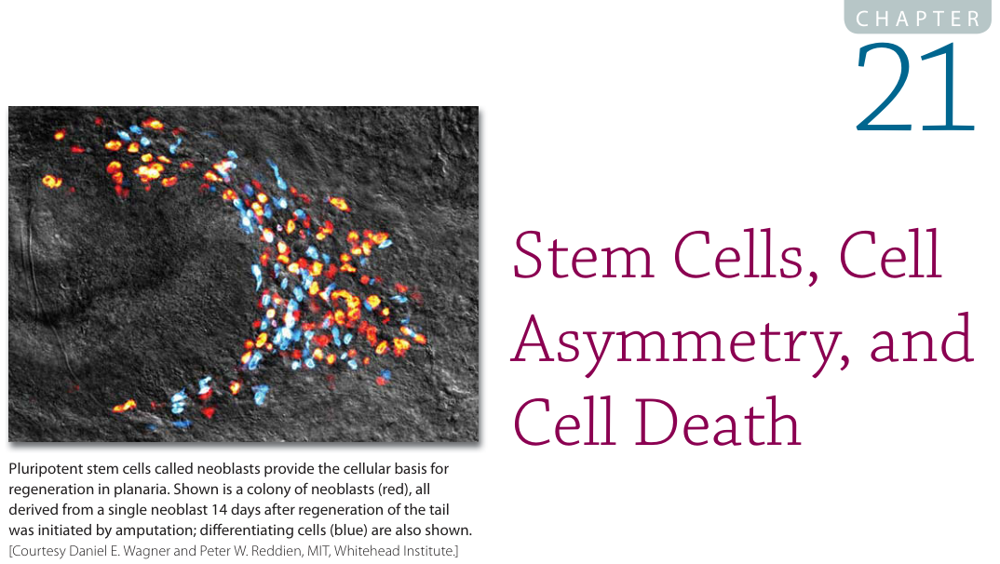
许多关于细胞分裂的描述都暗示，亲代细胞产生两个在形态和功能上与亲代细胞完全相同的子细胞。换言之，它们暗示细胞分裂是对称的，而且子代具有与亲代相似的特性（图21-1a）。许多酵母、真菌和其他单细胞真核生物确实以这种方式分裂。成熟的肝细胞（hepatocytes）也进行对称分裂，各自产生两个子代肝细胞。
但如果情况总是如此，复杂多细胞植物和动物中存在的数百种分化细胞类型和行使功能的组织就永远不会形成。当两个最初相同的子细胞因接受不同的发育信号或环境信号而发生分歧时，细胞间的差异便可产生。或者，两个子细胞可能从"出生"起就不同，各自继承亲代细胞的不同部分（图21-1b）。由这种不对称细胞分裂产生的子细胞可能在大小、形状或蛋白质组成上有所不同，或者它们的基因可能处于不同的活性状态或潜在活性状态。这些内部信号的差异赋予两个细胞不同的命运。在某些不对称细胞分裂中，其中一个子细胞与亲代细胞相似，另一个则形成不同类型的细胞。
在多细胞生物中，无论在发育过程中还是在细胞更替过程中，功能性组织和器官的形成都取决于有丝分裂的特定模式。一系列类似于家谱的此类细胞分裂称为细胞谱系。细胞谱系追踪细胞的诞生顺序，在此过程中细胞的发育潜能逐渐受到更多限制，并分化成特化的细胞类型，如皮肤细胞、神经元或肌细胞（图21-1c）。
一个新的后生动物的发育始于卵，即卵母细胞，它携带来自母本的一套染色体，以及精子，它携带一套染色体来自父本。这些配子，即性细胞，是单倍体的，因为它们经历了减数分裂（见第19章）。在称为受精的过程中，它们结合产生最初的单个细胞，即受精卵，它有两套染色体，因此是二倍体。在胚胎发生过程中，受精卵经历许多次细胞分裂，既有对称的也有不对称的，最终产生一个完整的生物体。正如我们将在本章后面看到的（见下文图21-25），线虫秀丽隐杆线虫的许多早期分裂遵循镶嵌式发育策略，其中所有早期细胞分裂都是不对称的，每个子细胞产生一组特定的分化细胞类型，原因是位于细胞质颗粒中的调节蛋白被不均等地分配给子细胞。
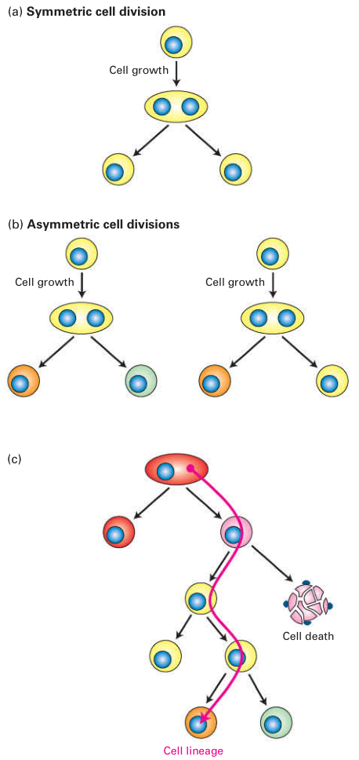
| Cell growth | 细胞生长 |
| Cell lineage | 细胞谱系 |
| Cell death | 细胞死亡 |
| Symmetric cell division | 对称细胞分裂 |
| Asymmetric cell division | 不对称细胞分裂 |
本章第一节的重点是早期哺乳动物发育及其受细胞间相互作用的调控。小鼠和人胚胎都要经过八细胞期，此时每个细胞仍能形成所有组织（胚胎组织和胚外组织都有）；也就是说，八个细胞都是全能性的。到十六细胞期，情况就不再如此：其中一些细胞已经定向于特定的分化途径。在调整型发育中，起重要作用的决定细胞命运的因素是特定细胞的位置，而不是形态发生素的分离。一群称为内细胞团的细胞最终将产生胚胎本体的所有组织，另一群细胞将形成胎盘组织。像内细胞团中那些能产生所有胚胎组织、但不能产生胚外组织的细胞，称为多能性细胞。
干细胞在后生动物发育和成年生活中都很重要。它们是非特化的细胞，既能自我复制，也能产生特定类型的更特化的细胞（见图21-1b）。它们的名字来自植物茎的形象，茎向上生长，继续形成更多的茎，同时还向侧面长出叶和枝。在本章第二、三节中，我们探讨几种干细胞，它们能形成的特化细胞类型的范围各不相同。干细胞可以进行对称分裂，此时两个子细胞都是干细胞。动物和植物中许多类型的干细胞进行不对称分裂，其中一个子细胞是干细胞。因此，在生物体的一生中，干细胞的数量可以保持恒定，也可以增加。受精卵是全能的，因为它有能力产生体内的每一种细胞类型以及胚胎发育所需的支持性胎盘细胞，但由于受精卵不能自我更新（产生更多自身），所以它不被视为干细胞。
在21.2节中我们将了解到，内细胞团的细胞可以在确定成分的培养基中培养，形成胚胎干细胞（ES细胞）。ES细胞可以在培养中无限期生长，它们在那里进行对称分裂，因此每个子细胞都保持多能性，并有可能产生动物的所有组织。我们将讨论ES细胞在揭示多能性背后的基因表达转录网络方面的用途，以及在为研究目的而形成特定类型的分化细胞方面的用途，或者有潜力作为患者的衰老或病变细胞的"替换部件"。
许多年来，动物细胞分化一直被认为是单向的，但最近的数据表明，分化可以在实验上被逆转。通过重组表达特定的转录因子，一种特化的分化细胞可以转变成另一种分化细胞。引人注目的是，在确定的条件下，仅将少数控制ES细胞多能性的转录因子导入多种类型的分化细胞，就能把其中至少一些体细胞转变成诱导多能干细胞（iPS细胞），其特性看起来与ES细胞无法区分。正如我们将在21.2节看到的，iPS细胞对实验生物学和医学具有重大用途。
许多类型细胞的寿命远短于整个生物体的寿命，因此需要不断被替换。例如，在哺乳动物中，衬在肠道内的细胞和具有吞噬作用的巨噬细胞只能存活几天。因此，干细胞不仅在发育过程中重要，对于成年生物体中衰老细胞的替换也很重要。与ES细胞不同，成体中的干细胞是多潜能性的：它们能产生生物体中存在的部分类型的分化细胞，但不是全部。在本章第三节中，我们讨论几个多潜能干细胞的例子，包括那些产生生殖细胞、肠道细胞以及血液中各种细胞类型的干细胞。
我们已经提到，动物中细胞类型的多样性需要不对称细胞分裂，其中两个子细胞的命运不同。这一过程要求亲代细胞在细胞分裂前变得不对称，即极化，以便细胞内容物在两个子细胞之间不均等分配。这一极化过程不仅在发育过程中至关重要，而且对几乎所有细胞的功能都至关重要。例如，转运上皮细胞，如衬在肠道内的那些细胞，是极化的，其游离的顶端表面朝向管腔以吸收营养物质，其基底外侧表面接触细胞外基质以将营养物质向血液转运（见图11-30和图20-1）。其他例子包括沿趋化梯度迁移的细胞（见图18-53）和神经元，后者有多个树突从细胞体的一侧伸出以接收信号，还有一根轴突从另一侧伸出以将信号传递给靶细胞（见第22章）。因此，细胞用于极化的机制是其功能的重要而普遍的方面。毫不奇怪，这些机制整合了细胞信号转导途径（见第15、16章）、细胞骨架重排（见第17、18章）和膜运输（见第14章）等要素。在本章第四节中，我们讨论细胞如何极化，以及不对称细胞分裂对维持干细胞和产生分化细胞的重要性。
通常，我们从所形成的分化细胞类型的角度来考虑细胞命运。一种完全不同的细胞命运，即程序性细胞死亡，在许多组织的形成和维持中也绝对关键。一个精确的、有制衡机制的遗传调控系统控制着细胞死亡，正如其他遗传程序控制细胞分裂和分化一样。在本章最后一节中，我们讨论细胞死亡的机制及其调控。
细胞生物学的这些方面——细胞诞生、细胞极性的建立以及程序性细胞死亡——与发育生物学交汇，它们是前面章节所讨论的信号途径所调控的最重要的过程之一。
21.1 早期哺乳动物发育
本节的主要焦点是早期哺乳动物发育中的最初几次细胞分裂；下一节讨论胚胎干细胞和iPS细胞的特性。我们首先解释单个精子如何被允许与卵融合，从这两个单倍体生殖细胞产生一个具有二倍体基因组的受精卵。
受精使基因组合为一体
哺乳动物精子竟能到达并穿入卵，这很不寻常。其一，在人类中，每个精子都要与超过1亿个其他精子竞争一个卵母细胞。此外，精子必须游过令人难以置信的距离才能到达卵（如果精子有人那么大，所游的距离相当于好几英里！）。而且到达之后，精子还必须奋力穿过卵周围阻止精子进入的多层结构（图21-2a）。精子的构造是为速度和游泳能力而优化的。人精子鞭毛（见第18章）含有约9000个动力蛋白马达，它们在50 μm的轴丝中使微管弯曲。尽管如此，只有几十个精子能够到达卵母细胞。
如图21-2所示，精子到达卵后，必须首先穿入环绕卵母细胞的卵丘细胞层，然后穿入透明带，后者是一种凝胶状的细胞外基质，主要由三种称为ZP1、ZP2和ZP3的糖蛋白组成。顶体位于精子的前端，是一个有膜包被的区室，专门用于与卵母细胞相互作用。顶体膜的一侧紧贴在精子头部的质膜下方；顶体膜的另一侧紧邻核膜。顶体内部有可溶性酶，包括水解酶和蛋白酶。一旦接近卵母细胞，顶体就发生胞吐，将其内容物释放到卵母细胞表面（图21-2b，步骤2）。这些酶消化卵表面的多层结构，从而开始精子进入的过程。这是一场竞赛，第一个成功的精子会触发卵母细胞做出剧烈反应，阻止多精入卵，即阻止其他精子进入而带入多余的染色体。
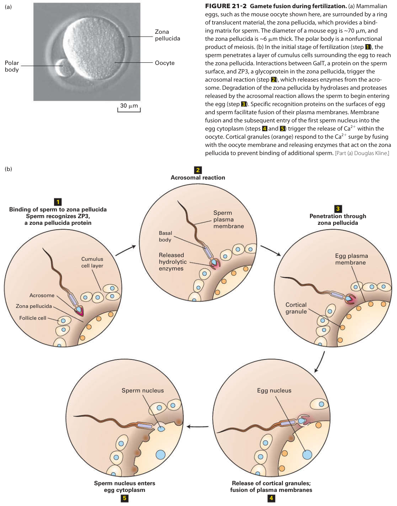
| Zona pellucida | 透明带 |
| Oocyte | 卵母细胞 |
| Polar body | 极体 |
| Acrosome | 顶体 |
| Cortical granule | 皮质颗粒 |
| Egg nucleus | 卵核 |
| Sperm nucleus | 精核 |
| Follicle cell | 卵泡细胞 |
| Cumulus cell layer | 卵丘细胞层 |
| Basal body | 基体 |
| Sperm plasma membrane | 精子的质膜 |
| Egg plasma membrane | 卵的质膜 |
| Acrosomal reaction | 顶体反应 |
| Binding of sperm to zona pellucida | 精子与透明带结合 |
| Penetration through zona pellucida | 穿入透明带 |
第一个精子成功与卵母细胞膜融合后，一股钙流进入卵母细胞胞质溶胶，并从精子进入的部位向外扩散。与其他受调控的分泌途径一样，钙升高的一项效应是触发位于卵质膜正下方的囊泡，即皮质颗粒，与质膜融合，将其内容物释放到质膜外侧，并形成一层起屏障作用的受精膜，阻止其他精子进入。最后，精子核进入卵细胞质，卵核与精核很快融合，形成二倍体的受精卵核。
卵母细胞在结合时带来了相当可观的"嫁妆"。它们含有多个线粒体及其线粒体DNA，后者的遗传完全是母系的；在哺乳动物和许多其他物种中，没有精子线粒体DNA进入卵母细胞（见第12章）。女性特有的线粒体DNA遗传已被用于追踪人类历史中的母系血统；例如，它被用来追踪早期人类从非洲起源后的迁徙。卵细胞质中还充满了母源mRNA：其产物对最早发育阶段至关重要的基因的转录本。在卵母细胞减数分裂和最初的胚胎卵裂期间，几乎没有或完全没有转录，因此在这段时间里，卵母细胞的mRNA至关重要。
哺乳动物胚胎的卵裂引发最初的分化事件
受精卵不会长时间保持为单个细胞。受精之后很快发生卵裂，即一系列每次约需一天的细胞分裂（图21-3）；这些分裂发生在胚胎植入子宫壁之前。最初，细胞相当圆，彼此松散地附着。正如在绵羊中实验证明的那样，8细胞期的每个细胞都是全能性的，当植入假孕动物（经激素处理使其子宫对胚胎有反应的动物）的子宫内时，有潜力产生一个完整的动物。
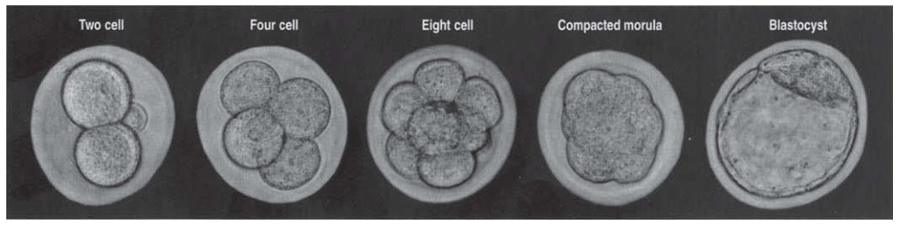
受精三天后，8细胞胚胎再次分裂，形成16细胞的桑椹胚（源自希腊语"覆盆子"），此后细胞彼此之间的亲和力大幅增加，胚胎发生致密化，这一过程部分依赖于细胞表面的同型细胞黏附蛋白E-cadherin（见图20-14）。由细胞间黏附增强驱动的致密化过程最初产生一个更致密的细胞团，即致密桑椹胚。在下一步中，一些细胞间黏附在局部减弱，液体开始流入一个称为囊胚腔的内部腔室。进一步的分裂产生囊胚（见图21-3）。
囊胚由大约64个细胞组成，它们已分成两种细胞类型：滋养外胚层（TE），将形成胎盘等胚外组织；以及内细胞团（ICM）（小鼠中仅10～15个细胞），它产生胚胎本体（图21-4a）。在囊胚中，ICM位于囊胚腔的一侧，而TE细胞在ICM和囊胚腔周围形成一个中空的球。此时，TE细胞处于一个上皮片中，而ICM细胞是一个松散细胞团，可描述为间充质。间充质这一术语最常用于中胚层来源的细胞，指的是组织松散、附着松散的细胞。
早期胚胎中细胞的命运——TE还是ICM——由细胞的位置决定。如果把一个被标记的细胞放在极早期胚胎的外部，它很可能形成胚外组织；而放在胚胎内部的细胞则很可能形成胚胎组织（图21-4b、c）。对早期发育各阶段的基因表达测定显示，哪些基因被表达发生了剧烈变化。即使是这些极早期的胚胎也利用Wnt、Notch和TGF-β信号来调控基因表达（见第16章）。
ICM细胞和TE细胞都是干细胞：各自起始自己独特的谱系，并大量分裂以产生多样的细胞群体。下一节我们要关注的就是ICM干细胞。
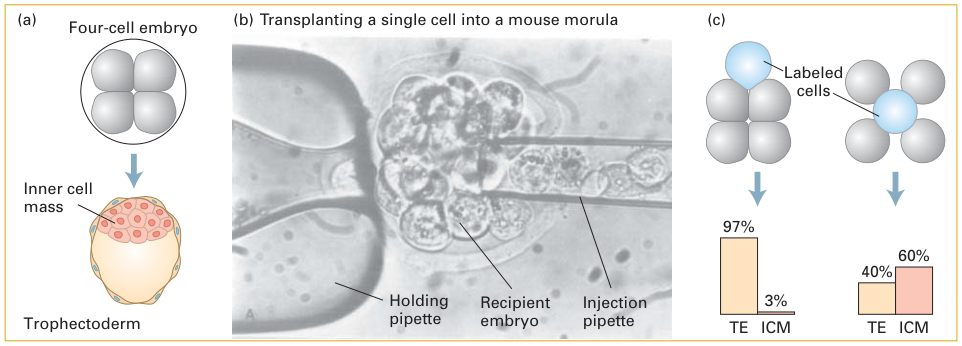
| Four-cell embryo | 四细胞胚胎 |
| Trophectoderm (TE) | 滋养外胚层（TE） |
| Inner cell mass (ICM) | 内细胞团（ICM） |
| Labeled cells | 标记细胞 |
| Holding pipette | 持卵管 |
| Recipient embryo | 受体胚胎 |
| Injection pipette | 注射管 |
21.2 胚胎干细胞与诱导多能干细胞
本节我们讨论两类多能性哺乳动物细胞：胚胎干细胞（ES细胞）与诱导多能干细胞（iPS细胞）。我们的关注点在于调控这些细胞多能性状态、并可进而产生多种分化细胞类型的基因与蛋白网络。在培养中，这两类多能细胞可用于形成特定类型的分化细胞以供研究之用，或者有朝一日用作"替换零件"，替换患者体内磨损或患病的细胞。iPS细胞可由患多种疾病的患者制备，然后分化成该疾病所累及的那种特定细胞类型；在此我们可以看到，对这类细胞的研究如何能够阐明某个具体个体疾病的深层关键病因。
内细胞团是ES细胞的来源
胚胎干细胞可从早期哺乳动物胚胎的内细胞团中分离出来，并在附着于一层提供某些必需生长因子的饲养细胞层时在培养中无限期生长（图21-5a）。正如章首引言所述，培养的ES细胞是多能性的：无论在培养中还是在重新植入宿主胚胎之后，它们都能分化成三个原胚层的多种细胞类型。更具体地说，小鼠ES细胞可注射到早期小鼠胚胎的囊胚腔中，随后将该细胞聚集体通过手术移植到假孕雌鼠的子宫内。注射的ES细胞将参与形成所得嵌合小鼠的绝大多数（即使不是全部）组织（见图6-38）。此外，注射的ES细胞常常会产生功能性的精子和卵子，后者又能产生正常的活小鼠。
在这些实验的一个较新的变体中，宿主囊胚用暂时阻断有丝分裂的药物处理，使其细胞变成四倍体（每条染色体有四个拷贝，不能形成分化的细胞和组织），而注射进去的ES细胞则是二倍体注入囊胚。在这种情况下，囊胚聚集体移植后所出生的小鼠体内所有细胞都源自供体ES细胞。这一发现是有力证据，表明单个小鼠ES细胞确实具有多能性。由于伦理考量以及许多国家的法律限制不允许对人ES细胞进行类似的移植实验，因此缺乏它们具有多能性的正式证明。
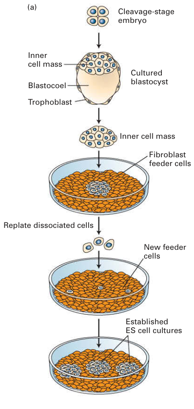
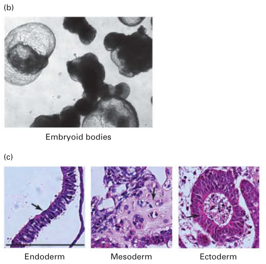
| cleavage-stage embryo | 卵裂期胚胎 |
| blastocyst | 囊胚 |
| inner cell mass | 内细胞团 |
| fibroblast | 成纤维细胞 |
| feeder cell | 饲养细胞 |
| ES cell culture | ES细胞培养物 |
| blastocoel | 囊胚腔 |
| trophoblast | 滋养层 |
| embryoid body | 拟胚体 |
| endoderm | 内胚层 |
| mesoderm | 中胚层 |
| ectoderm | 外胚层 |
重要的是，人ES细胞和小鼠ES细胞都能在培养中分化成多种细胞类型。在悬浮培养时，ES细胞形成多细胞聚集体，称为拟胚体（图21-5b），它们所形成组织的多样性类似早期胚胎。当拟胚体随后用各种组合的生长因子处理或转移到固体表面时，它们会产生多种分化细胞类型，包括肠上皮、软骨和神经细胞（图21-5c）。在其他条件下，ES细胞已被诱导在培养中分化成各种特定细胞类型的前体，包括血细胞和色素上皮；正因如此，ES细胞在鉴定使多能细胞定向分化为某一特定细胞谱系的因子方面极为有用。
早期胚胎的这些细胞具有何种特性，使它们拥有如此惊人的可塑性？正如我们将在下一节看到的，多种因素都在发挥作用：DNA甲基化、转录因子、染色质调控因子和微小RNA都会影响哪些基因被激活。
多种因子控制ES细胞的多能性
在胚胎发生的最早阶段，随着受精卵开始分裂，父源和母源的DNA都变得去甲基化（见第9章关于DNA甲基化的讨论）。这部分是因为一种关键的维持性甲基转移酶Dnmt1被暂时排除在细胞核之外，部分是因为在早期发育过程中去甲基化酶主动移除或"擦除"5-甲基胞嘧啶残基上的甲基化标记。因此，DNA甲基化模式在最初几次细胞分裂中即被重置，抹去先前DNA上的表观遗传标记，并创造出细胞具有更大潜力走向多样化发育途径的条件。被改造为缺失Dnmt1的小鼠在早期胚胎期死亡，其DNA甲基化程度严重不足。由此类胚胎制备的ES细胞能够在培养中分裂，但与正常ES细胞不同，不能进行体外分化。
ES细胞的特性还至关重要地依赖于受精后不久产生的主控转录因子的作用。转录因子Oct4、Sox2和Nanog在早期发育中具有必需作用，它们既是胚胎中ICM细胞特化所必需的，也是培养中ES细胞特化所必需的。Oct4和Nanog的表达仅局限于多能细胞，如ICM细胞和培养的ES细胞。Sox2存在于多能细胞中，但其表达在多潜能神经干细胞中也是必需的，后者专门产生神经元和胶质细胞类型（见第22章讨论）。小鼠遗传学研究提示，这三个调控因子作用各异，但可能通过相关途径发挥作用以维持多能细胞的发育潜能。例如，破坏Oct4或Sox2会导致ICM细胞和ES细胞不恰当地分化成滋养外胚层。然而，在ES细胞中强制表达Oct4所产生的表型与Nanog功能丧失所致的表型相似。因此，了解这些转录因子所调控的基因组有可能揭示它们在发育过程中的必需作用。
这三个转录因子所结合的基因已通过染色质免疫沉淀实验鉴定出来（见第9章）；每种蛋白都存在于一千多个染色体位点上。靶基因编码多种多样的蛋白，包括Oct4、Nanog和Sox2蛋白本身，形成一个自调控环路，其中这三个转录因子各自既诱导自身的表达，也诱导另外两个的表达（图21-6）。这些转录因子还结合到许多基因的转录控制区，这些基因编码的蛋白和微小RNA对ES细胞的增殖与自我更新很重要。
饲养细胞提供若干蛋白激素，或向培养基中添加这些激素，以防止ES细胞分化。这些激素包括白血病抑制因子（LIF），它激活Stat3；Wnt，它激活β-catenin转录因子；以及骨形态发生蛋白4（BMP4），它激活Smad1转录因子（见第16章）。在ES细胞中，这三个转录因子结合于被Oct4、Nanog和Sox2蛋白共同占据的多个基因组位点。因此，细胞表面受体激活的信号通路直接偶联到核心多能性环路中基因的调控；这一观察强化了第16章提出的一个观点：由细胞表面受体激活的转录因子常常结合于该类型细胞特有的主控转录因子所占据的基因组位点。
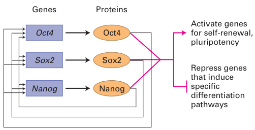
| pluripotency | 多能性 |
| self-renewal | 自我更新 |
| differentiation | 分化 |
| Oct4 | Oct4 |
| Sox2 | Sox2 |
| Nanog | Nanog |
| Genes | 基因 |
| Proteins | 蛋白 |
控制基因转录的染色质调控因子（见第9章）在ES细胞中也很重要。在果蝇中，Polycomb组蛋白形成复合物，以维持先前由DNA结合转录因子建立的基因抑制状态。两个与果蝇Polycomb蛋白相关的哺乳动物蛋白复合物PRC1和PRC2（见图9-48）在ES细胞中很丰富。缺乏PRC2组分的早期小鼠胚胎表现出早期发育缺陷。PRC2复合物通过向组蛋白H3第27位赖氨酸添加甲基来发挥作用，从而改变染色质结构以抑制基因。（请注意，这里的甲基化发生在蛋白的某个氨基酸上，这种调控类型与DNA中胞嘧啶残基的甲基化不同。）在ES细胞中，PRC1和PRC2都沉默那些所编码的蛋白或微小RNA（miRNA）否则会诱导分化成特定类型细胞的基因；Polycomb蛋白还将这些基因维持在一个表观遗传的"预激活"状态，使它们准备好稍后在特定发育基因表达程序的正确执行过程中被激活。因此，缺乏PRC2功能的ES细胞不能正常分化。
许多其他调控因子在极早期发育中控制基因表达和维持多能性方面发挥重要作用。例如，编码miRNA let-7的基因在ES细胞中转录，但其前体RNA转录物不被切割形成成熟、有功能的miRNA。ES细胞表达一种受发育调控的RNA结合蛋白，称为Lin28，它结合到let-7前体RNA上并阻止其被切割。在ES细胞中实验性表达成熟的let-7 miRNA会阻断其进行自我更新的能力，因此Lin28对let-7加工的抑制对于多能性是必需的。
正如我们稍后将看到的，利用胚胎干细胞治疗性地恢复或替换受损组织的可能性，正在推动大量关于如何诱导它们分化成特定细胞类型的研究。除了在治疗疾病方面可能带来的益处外，ES细胞在产生用于研究各种疾病、发育机制、行为和生理学的小鼠突变体方面已证明极为宝贵。利用第6章所述的重组DNA技术，可以消除或修饰ES细胞中某一特定基因的功能（见图6-38）。然后可用突变后的ES细胞来产生基因敲除小鼠（见图6-39）。以这种方式分析删除或修饰某个基因所产生的效应，常常为该基因及其编码蛋白的正常功能提供线索。
动物克隆表明分化是可逆的
尽管不同细胞类型可能转录基因组的不同部分，但在大多数情况下基因组在所有细胞中都是相同的。在免疫系统的T淋巴细胞和B淋巴细胞从造血前体发育的过程中，基因组的某些片段会被重排和丢失（见第23章），但大多数体细胞似乎具有完整的基因组，与生殖系中的基因组相当。至少部分体细胞拥有完整且有功能的基因组的证据，来自通过核移植成功产生克隆动物。在这一常被称为体细胞核移植（SCNT）的操作中，一个成体体细胞的核被导入一个已去除核的卵中；经此操作的卵含有二倍体数目的染色体，相当于受精卵，随后被植入寄养母体。指导胚胎发育的唯一遗传信息来源是供体体细胞的核基因组。然而，通过SCNT产生克隆动物的效率很低，加上克隆动物中肥胖等疾病的发生率很高，这令人质疑究竟有多少成体体细胞确实拥有完整且有功能的基因组，以及那些确实拥有的细胞能否被完全重编程为多能性未分化状态。即便是成功的例子，如著名的克隆羊"Dolly"，也存在一些医学问题。即使分化细胞拥有物理上完整的基因组，显然其中只有一部分具有转录活性（见第9章）。例如，一个细胞可能拥有完整的基因组，但由于遗传下来的染色质表观遗传状态而无法正确地重新激活特定基因。
分化细胞的基因组能够恢复ES细胞所特有的全部发育潜能的进一步证据，来自这样一些实验：嗅觉感觉神经元——通常不会再分裂的有丝分裂后细胞——被用绿色荧光蛋白（GFP）进行遗传标记，然后用作细胞核的供体（图21-7）。当来自分化嗅觉感觉神经元的细胞核被植入去核的小鼠卵母细胞时，其中一小部分发育成产生GFP的囊胚。这些囊胚被用来建立ES细胞系，后者又被用来产生小鼠胚胎。这些完全源自嗅觉感觉神经元基因组的胚胎形成了健康的、发绿色荧光的小鼠。因此，至少在某些情况下，分化细胞的基因组可以被完全重编程，以形成小鼠的所有组织。
体细胞可产生iPS细胞
由于体细胞核移植效率低下，人们仍不清楚是否所有类型的哺乳动物体细胞都保留了完整的基因组，以及它们能否被诱导去分化成类似ES细胞的状态。山中伸弥（Shinya Yamanaka）使用逆转录病毒载体在培养的成纤维细胞中单独或组合表达多种转录因子。引人注目的是，他发现人和小鼠成纤维细胞都可通过用只编码四种蛋白——KLF4、Sox2、Oct4和Myc——的逆转录病毒转化，被重编程为一种多能性状态，称为诱导多能干细胞状态，与胚胎干细胞的状态相似。请注意，其中两种，Sox2和Oct4，正是前面讨论过的在ES细胞中表达的两个主控转录因子。除成纤维细胞外，角质形成细胞（形成皮肤的细胞）和其他类型的分化细胞也已被重编程为iPS细胞。与ES细胞一样，单个小鼠iPS细胞可被实验性地导入囊胚并形成小鼠的所有组织，包括生殖细胞，这证明体细胞确实可以被重编程为胚胎多能性状态。
另外几种转录因子，甚至某些小分子有机化合物，都能在Yamanaka重编程"鸡尾酒"中替代Oct4基因。随后的分析发现，这些因子中的每一个都直接激活内源性（细胞自身的）Oct4基因的转录，从而诱导多能性。因此有人假设，随着时间的推移，强制表达转录因子基因会激活许多细胞基因的表达，包括编码Oct4和其他多能性蛋白的基因；在数周的过程中，这种激活将体细胞重编程为类似ES细胞的状态。为了从实验上确立内源基因的激活导致重编程为ES样状态这一点，培养的角质形成细胞被反复转染编码四种经典的Yamanaka转录因子KLF4、Sox2、Oct4和Myc的合成mRNA。这些培养细胞产生了正常的iPS细胞，其中没有任何外源添加mRNA的痕迹，证明仅通过诱导正常细胞基因的表达即可将角质形成细胞重编程为iPS细胞。
在成纤维细胞中，大多数与多能性相关的基因的染色质无法被转录因子结合，这主要是由于抑制性的组蛋白H3第9位赖氨酸三甲基化（H3K9Me3）标记。在被Oct4激活的基因中有两个编码H3K9去甲基化酶，它们移除这些抑制性染色质标记，并随时间推移导致多能性基因的激活。与这一观点一致，这些H3K9去甲基化酶的表达在重编程过程中增加，而敲低它们会抑制高效的iPS细胞产生。确实，重编程涉及表观遗传修饰的重大变化，包括DNA甲基化以及其他几种组蛋白修饰，这些修饰用于抑制或允许数百个基因的潜在激活。
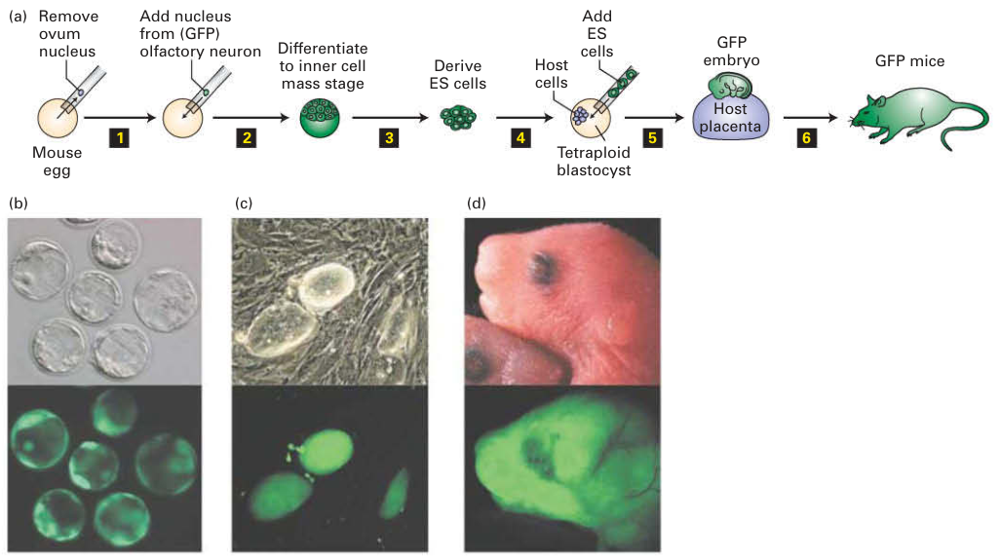
| olfactory sensory neuron | 嗅觉感觉神经元 |
| mouse egg | 小鼠卵 |
| blastocyst | 囊胚 |
| tetraploid blastocyst | 四倍体囊胚 |
| inner cell mass | 内细胞团 |
| nucleus | 细胞核 |
| ovum | 卵 |
| placenta | 胎盘 |
| embryo | 胚胎 |
| ES cell | ES细胞 |
| host cell | 宿主细胞 |
| GFP | GFP（绿色荧光蛋白） |
由于iPS细胞可从患有难以理解疾病的患者的体细胞中获得，它们在揭示若干疾病的分子和细胞基础方面已证明极为宝贵（图21-8）。以肌萎缩侧索硬化（ALS）为例，它常被称为Lou Gehrig病，是一种致死性疾病，其中连接脊髓与身体肌肉的运动神经元逐渐死亡，导致肌无力和死亡、肢体瘫痪，最终因呼吸衰竭而死亡。此病无法治愈。
在约10%的患者中，该病呈显性遗传（家族性ALS），但在90%的患者中，没有明显的遗传连锁（散发性ALS）。多年来，从分子和细胞水平分析该病的深层病因是不可能的，因为人们无法简单地从活人体内取出神经元或其周围的胶质细胞并对其进行分析或培养。
在约20%的家族性ALS患者中，编码Cu/Zn超氧化物歧化酶1的基因SOD1存在点突变；突变型SOD1蛋白形成可损伤细胞的聚集体。约40%的家族性ALS患者和10%的非遗传型患者携带C9ORF72基因（功能未知；全称9号染色体开放阅读框72）的突变。这种突变也常出现在额颞叶痴呆患者中，后者是仅次于阿尔茨海默病的第二常见痴呆类型，这解释了为什么有些人会同时患上这两种疾病。正常人C9ORF72基因转录出的mRNA含有最多30个六核苷酸GGGGCC重复，但致ALS的突变基因可有数千个这样的重复。
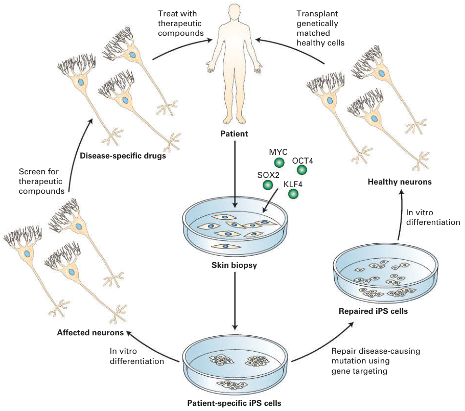
| patient-specific iPS cell | 患者特异性iPS细胞 |
| skin biopsy | 皮肤活检 |
| repaired iPS cell | 修复后的iPS细胞 |
| healthy neuron | 健康神经元 |
| affected neuron | 受累神经元 |
| disease-specific drug | 疾病特异性药物 |
| therapeutic compound | 治疗化合物 |
| gene targeting | 基因打靶 |
| in vitro differentiation | 体外分化 |
| MYC | MYC |
| OCT4 | OCT4 |
| KLF4 | KLF4 |
| SOX2 | SOX2 |
在数项研究中，源自患有这些及其他家族性和散发性ALS的老年患者皮肤细胞的iPS细胞，被成功地在培养中分化形成运动神经元；这一成功证明了利用iPS细胞的自我更新来产生几乎无限供应的、ALS特异性累及细胞的可行性。一项研究显示，携带几种ALS突变的运动神经元处于超兴奋状态，产生的被称为动作电位的电信号（见第22章）比正常情况更多。这种过度兴奋还使这些神经元在蛋白折叠方面出现更多错误，并积累错误折叠的蛋白，导致细胞功能异常。在来自携带C9ORF72突变的患者的iPS衍生神经元中，含大量重复GGGGCC序列的RNA处于聚集体中，与多种对正常细胞功能重要的RNA结合蛋白结合；这种结合阻止了这些蛋白催化其他细胞mRNA生成中的关键步骤。总体而言，C9ORF72突变使运动神经元产生异常量的许多其他细胞RNA，并使这些细胞对应激非常敏感。
在一项旨在剖析ALS分子病因的独立研究中，运动神经元由人ES或iPS细胞产生，并与原代人星形胶质细胞共培养，后者是一种围绕神经元并调控其若干功能的胶质细胞（见图22-17）。许多运动神经元在星形胶质细胞表达突变型SOD1时死亡，而在其表达野生型时则不死，提示至少在这种家族性ALS中，缺陷细胞既包括星形胶质细胞也包括运动神经元。确实，表达突变型SOD1的星形胶质细胞分泌了对邻近运动神经元有毒的蛋白因子。
在这些以及其他几项研究中，研究人员筛选了数千种小分子有机化合物（包括许多已被批准用于治疗其他无关疾病的药物），以寻找能逆转ALS iPS细胞衍生运动神经元异常的化合物。有几种被鉴定出来，并正在临床试验中检验它们能否减缓或阻止ALS的破坏性后果。无论如何，这些实验说明了iPS细胞和ES细胞在建立许多难以研究的人类疾病细胞培养模型方面的价值，这些模型可用于筛选有可能治疗许多目前尚无法治疗的疾病的药物。 ■
ES细胞与iPS细胞可产生功能性的人分化细胞
源自人iPS细胞的神经元和胶质细胞以及其他细胞类型已被植入小鼠，取得了一些有希望的结果。干细胞衍生的心肌细胞（即心脏的肌肉细胞）可纠正心律失常；某些胶质细胞——少突胶质细胞——在帮助实验性脊髓损伤恢复方面显示出前景；视网膜上皮细胞可部分纠正失明小鼠模型的缺陷。
一项最新的进展——从人iPS和ES细胞产生正常的分泌胰岛素的β胰岛细胞——显示出治疗1型和2型糖尿病的前景。1型糖尿病由自身免疫性破坏胰腺β细胞所致，而更常见的2型糖尿病由肝脏和肌肉中的胰岛素抵抗所致（见图16-40），最终导致β细胞功能障碍和死亡。接受尸体来源人胰岛移植的患者可在5年或更长时间内不再依赖胰岛素，但这种方法因供体胰岛的稀缺和质量问题而受限；因此，从干细胞获得几乎无限供应的人β细胞的可能性，有可能将这种疗法扩展到数百万新患者。
成功产生这些β细胞的一个关键，是采用不同生长因子组合的连续处理，刺激iPS或ES细胞走过正常的胚胎发育程序，即未分化ICM细胞的后代形成β细胞的过程（图21-9a）。所得所谓的SC-β细胞，其结构与正常β胰岛细胞非常相似，包括充满近乎结晶状胰岛素的分泌颗粒（见图14-23）；它们还能在培养基葡萄糖水平升高时分泌正常量的胰岛素。移植入小鼠后不久，这些细胞便以受葡萄糖调控的方式向血清中分泌人胰岛素。最重要的是，将这些细胞移植到免疫缺陷糖尿病小鼠体内后，其高血糖水平被降低至正常（图21-9b），表明这些胰岛细胞——它们可在培养中几乎无限量地产生——有用于治疗糖尿病的潜力。用于鉴定能改善β细胞功能、存活或增殖的新药的筛选，也可以利用这样一批均一的干细胞衍生β细胞。
这些SC-β细胞无疑是未来发展的先声。未来几年必定会看到从人iPS细胞开发出许多其他类型的分化细胞，可用作治疗各种疾病的"替换零件"。然而，在能够充分评估使用人ES细胞或iPS细胞进行治疗的可行性之前，必须回答许多重要问题。例如，当未分化的人或小鼠ES细胞或iPS细胞被移植到实验小鼠体内时，它们会形成畸胎瘤，这是一种含有大量部分分化细胞类型的肿瘤。因此，必须确保用于植入的所有ES细胞或iPS细胞确实已经分化，并且已失去多能性及其诱导畸胎瘤或引起其他问题的能力。
- 内细胞团既是胚胎本体的来源，也是胚胎干细胞的来源。
- 培养的胚胎干细胞（ES细胞）具有多能性，能够产生该生物体除胚外组织以外的所有分化细胞类型。它们在产生遗传改造小鼠方面很有用，并具有治疗用途的潜力。
- ES细胞的多能性受多种因子控制，包括DNA甲基化状态、染色质调控因子、某些微小RNA，以及转录因子Oct4、Sox2和Nanog。
- 动物克隆证明细胞分化是可以逆转的。
- 诱导多能干细胞（iPS细胞）可通过表达关键转录因子的组合而由体细胞形成，这些转录因子包括KLF4、Sox2、Oct4和Myc。
- 正如ALS这一例子所示，由人iPS细胞在培养中产生的分化细胞既可用于了解某种疾病的深层病因，也可用于筛选可能治疗该病的药物。
- 由人iPS细胞在培养中产生的β胰岛细胞，能在培养基葡萄糖升高时正常分泌胰岛素，并逆转糖尿病小鼠的高血糖水平。
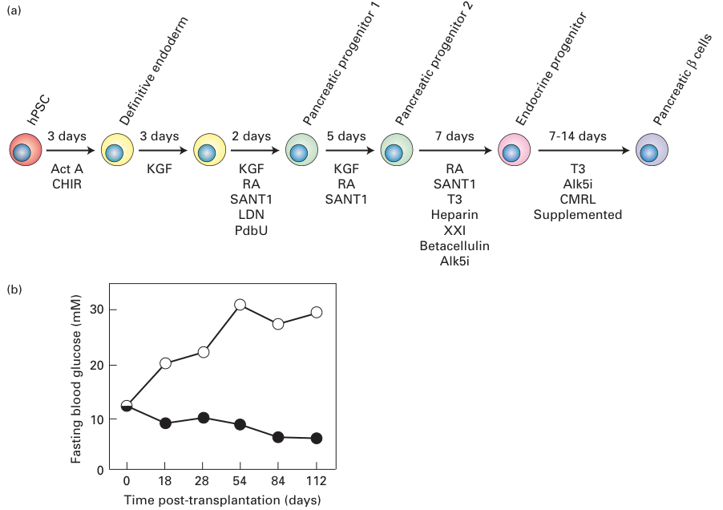
| definitive endoderm | 定型内胚层 |
| hPSC | 人多能干细胞（hPSC） |
| pancreatic progenitor cell | 胰腺祖细胞 |
| endocrine progenitor | 内分泌祖细胞 |
| SC-β cell | SC-β细胞 |
| Act A | 激活素A |
| CHIR | CHIR（GSK3抑制剂） |
| KGF | 角质形成细胞生长因子（KGF） |
| RA | 维甲酸（RA） |
| SANT1 | SANT1（Sonic Hedgehog通路拮抗剂） |
| LDN | LDN（BMP 1型受体抑制剂） |
| PdbU | PdbU（蛋白激酶C激活剂） |
| Alk5i | Alk5i（Alk5受体抑制剂II） |
| T3 | 三碘甲状腺原氨酸（T3） |
| XXI | XXI（γ-分泌酶抑制剂） |
| betacellulin | betacellulin（EGF家族成员） |
| time post-transplantation | 移植后时间 |
| fasting blood glucose | 空腹血糖 |
21.3 多细胞生物中的干细胞与龛
许多分化细胞类型会从身体脱落，或其寿命短于生物体本身的寿命。疾病和创伤也可导致分化细胞丢失。由于大多数类型的分化细胞不分裂，它们必须由附近的体细胞干细胞群体补充。在脊椎动物和大多数无脊椎动物中，这类干细胞与多能性ES细胞不同，是多潜能性的，因为它们能产生生物体中存在的部分（而非全部）细胞类型。出生后（成体）脊椎动物体内许多组织都含有干细胞，包括血液、肠道、皮肤、卵巢、睾丸和肌肉。甚至成体大脑的某些部位——那里通常很少发生细胞分裂——也有一群干细胞（见第22章）。在横纹肌中，干细胞对愈合最为重要，因为其他时候细胞分裂相对很少。其他一些细胞类型，如肝细胞（hepatocyte）和分泌胰岛素的β胰岛细胞，主要靠已分化细胞的分裂来繁殖，例如手术切除大块肝脏后肝脏的再生。这些组织是否也含有能产生这些类型分化细胞的干细胞，尚存争议。
成体涡虫含有多能性干细胞
我们在第1章提到，涡虫的小块身体片段能再生出完整的动物。已知再生需要一群遍布成体全身的、称为新生细胞（neoblast）的增殖性干细胞样细胞，但一个关键问题是：再生究竟像大多数具有这种能力的动物那样，由多种谱系受限的干细胞或祖细胞共同活动完成，还是有干细胞参与。最近的实验表明，成体涡虫既有谱系受限的新生细胞，也有多能性干细胞，后者称为cNeoblast。
关键研究用伽马射线照射来抑制成体涡虫的大部分或全部细胞分裂；处理过的动物无法再生，并因衰老分化细胞无法被替换而出现大量组织丢失。照射后残留的少数有功能的增殖性新生细胞，可通过一个称为smedwi-1的标志基因来识别。照射数天后，单个新生细胞形成了smedwi-1阳性细胞集落，其中含有多种类型的分化体细胞（见章首插图），于是有人推测这个smedwi-1阳性新生细胞亚群是多能性的。为检验这一假说，研究者把单个新生细胞移植到自身新生细胞已被全部杀灭的、受过致死剂量照射的涡虫体内。值得注意的是，若干移植受体存活超过了7周，并从单个移植细胞再生出分布全身的神经元、肠道及其他分化细胞类型。这些动物最终恢复了摄食行为，并再生出包括光感受器在内的复杂组织。这些实验表明，成体涡虫的新生细胞干细胞中至少有一些确实是多能性的，这为涡虫非凡的再生能力提供了细胞学基础。尽管付出很多努力，但从未在任何成体脊椎动物中可靠地鉴定出多能性干细胞。
多潜能体细胞干细胞既产生干细胞也产生分化中的细胞
成体后生动物中最常见的干细胞类型——多潜能体细胞干细胞——产生构成身体组织的各种特化细胞。多潜能体细胞干细胞有三个关键特性（图21-10）：1. 它们能产生多种类型的分化细胞；也就是说，它们是多潜能性的。在这个意义上，它们不同于祖细胞（也称前体细胞），后者通常只产生单一类型的分化细胞。干细胞有能力产生若干种不同的细胞类型，但不是所有细胞类型；也就是说，它不像ES细胞那样是多能性的。例如，一个多潜能血液干细胞会生成更多自身以及多种类型的血细胞，但绝不会生成皮肤细胞或肝细胞。
2. 它们是干细胞，因为未分化；一般来说，它们不表达由其子代所形成的分化细胞类型所特有的蛋白质。
3. 某一特定类型的干细胞数量通常在胚胎发育期间增加，随后在个体余下的生命里保持相对恒定。在这个意义上，干细胞常被说成是不朽的，尽管没有任何一个干细胞能存活到动物的一生结束。事实上，当慢性组织损伤、反复多轮化疗或损害基因组完整性的遗传缺陷迫使干细胞比正常情况更频繁地分裂时，干细胞始终表现出有限的复制能力。
干细胞的两个关键特性共同将它们与所有其他细胞区分开来：在许多次细胞分裂中自我复制的能力（自我更新），以及产生潜能更受限的子代的能力。成体体内的许多类型干细胞很少分裂；它们被"储备"起来，以备需要某些类型的分化细胞时使用。相反，它们的非干细胞女儿细胞常常经历许多轮快速细胞分裂。这类细胞常称为短暂扩增细胞（见图21-10），其自我更新能力可能有限，但最终它们的众多子代形成谱系受限的祖细胞。这些细胞又能分裂，并产生非常特定类型的终末分化细胞。
干细胞可以表现出几种细胞分裂模式。某些类型的干细胞总是进行不对称分裂，产生一个与亲代细胞相同的细胞和一个能力更受限的女儿干细胞，例如只能分裂有限时间，或产生的子代类型比亲代干细胞少（图21-11a）。这种类型的干细胞分裂常见于无脊椎动物，如下面将要讨论的果蝇。
其他常见于脊椎动物的干细胞分裂模式，则允许干细胞或分化细胞的数目随动物的需要而增加或减少（图21-11b、c）。邻近细胞释放的激素常常调控这些干细胞分裂模式。例如，一个干细胞可进行对称分裂，产生两个命运不同的女儿细胞：取决于其他细胞发出的外部信号，一个可能保持为干细胞，另一个可能产生分化子代。正如我们稍后将更详细看到的，这种情况发生在小肠中：通常其中一个女儿细胞保持为与亲代相同的干细胞，而另一个女儿细胞快速分裂并产生四种类型的分化肠道细胞。另一些干细胞分裂是对称的，产生两个干细胞并增加某一特定类型干细胞的数量；这种干细胞分裂模式在发育过程中很常见。因此，干细胞的有丝分裂既可扩大干细胞群体，也可在持续产生分化细胞流的同时维持干细胞群体。
不同组织的干细胞占据维持性龛
干细胞需要合适的微环境来保持多潜能性并调控其分裂的时机和模式。除了内在的调控信号——比如某些转录因子和其他调控蛋白的存在——干细胞还依赖来自周围细胞的外源激素信号及其他调控信号来维持其干细胞身份。能维持干细胞命运的位置称为干细胞龛，这是类比于生态龛——即支持某一特定生物存在并具有竞争优势的位置。由龛所赋予的内在调控与外源调控的正确组合，将创建并维持一个干细胞群体。
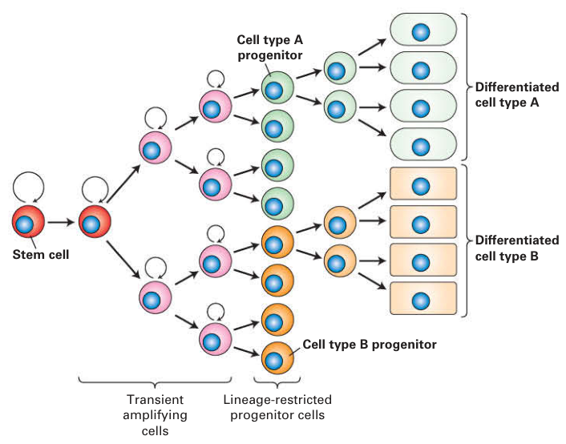
| Stem cell | 干细胞 |
| Transient amplifying cell | 短暂扩增细胞 |
| Lineage-restricted progenitor cell | 谱系受限祖细胞 |
| Cell type A progenitor | A型细胞祖细胞 |
| Cell type B progenitor | B型细胞祖细胞 |
| Differentiated cell type A | 分化细胞类型A |
| Differentiated cell type B | 分化细胞类型B |
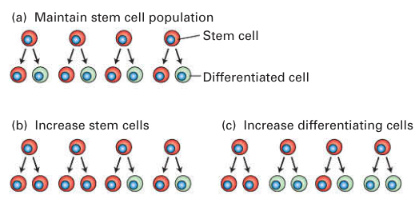
| Maintain stem cell population | 维持干细胞群体 |
| Increase stem cells | 增加干细胞 |
| Increase differentiating cells | 增加分化中的细胞 |
| Stem cell | 干细胞 |
| Differentiated cell | 分化细胞 |
为了研究或利用干细胞，我们必须找到它们并对其进行表征。精确鉴定干细胞往往很困难；它们在细胞中非常稀少，且一般没有独特的形态。大多数干细胞很少分裂，甚至完全不分裂，直到被传达需要新细胞的信号所刺激。例如，氧供应不足可刺激血液干细胞分裂，皮肤损伤可刺激再生性细胞分裂，后者始于干细胞的激活。有些干细胞，包括那些形成持续脱落的肠上皮的干细胞，则持续分裂，通常速率缓慢。在本节余下部分，我们将聚焦于植物和动物中四类已被充分表征的干细胞；未来几年，其他类型的干细胞也将被了解得非常详尽。
生殖系干细胞产生精子或卵母细胞
生殖系是产生卵母细胞和精子的细胞谱系。它不同于构成所有其他组织但不传给子代的体细胞。生殖系与体细胞谱系一样，始于干细胞，但这些干细胞是单能性的，因为它们只产生生殖细胞。在果蝇和秀丽隐杆线虫的生殖系干细胞（GSC）研究中，干细胞龛被定义得格外清楚。生殖系干细胞存在于成体蝇和蠕虫中，这些干细胞的位置也已众所周知。
在果蝇中，卵母细胞前体形成并开始分化的龛位于生殖区（germarium）末端附近，生殖区是卵巢中形成卵子的部分（图21-12a）。此位置有两三个生殖系干细胞，旁边是少数帽细胞（cap cell），帽细胞通过分泌TGF-β家族的两个蛋白Dpp和Gbb以及Hedgehog（Hh）蛋白来创建该龛（图21-12b）。（这些分泌型蛋白信号在第16章介绍过。）帽细胞之所以能创建龛，是因为它们发出的TGF-β类信号抑制了邻近生殖系干细胞中一个关键分化因子——Bag of marbles（Bam）蛋白——的转录。bam基因被抑制使生殖系干细胞得以进行自我更新分裂，而bam的激活则促进分化。当一个生殖系干细胞分裂时，产生的两个女儿细胞之一仍与帽细胞相邻，因而像亲代细胞一样被维持为干细胞。另一个女儿细胞离帽细胞太远，接收不到帽细胞来源的信号Dpp和Gbb。结果，Bam表达开启，使该女儿细胞进入分化程序。参与其中的信号有一部分是通过果蝇遗传学的威力鉴定出来的：Dpp或Gbb受体、或其下游信号转导蛋白有缺陷的突变生殖系干细胞会过早丢失。反过来，帽细胞过量表达Dpp会阻止生殖系干细胞分化，并导致形成肿瘤样细胞团块。
干细胞靠跨膜细胞表面蛋白E-cadherin（见第20章）固定于龛中，E-cadherin通过与帽细胞上相似的E-cadherin分子进行同型相互作用而形成黏着连接。这些黏着连接使生殖系干细胞的有丝分裂纺锤体取向，从而使一个女儿细胞保持附着在帽细胞上，另一个则被移出龛；类似的不对称干细胞分裂也发生在果蝇的其他发育阶段，我们稍后会讨论（见下文图21-30和图21-31）。Armadillo（Arm），即果蝇的β-catenin，把E-cadherin分子的胞质尾连接到肌动蛋白细胞骨架上；与E-cadherin一样，Arm对维持干细胞龛也很重要。
生殖区中另有一类体细胞干细胞，它们产生日后构成卵壳的卵泡细胞。体细胞干细胞也有龛，该龛由内鞘细胞（inner sheath cell）创建，内鞘细胞产生Wingless（Wg）蛋白——一种果蝇Wnt信号——和Hh蛋白（图21-12c）。帽细胞产生的Hedgehog可能也起作用。因此，两个不同的干细胞群体可以紧密协同地工作，以产生卵的不同部分。
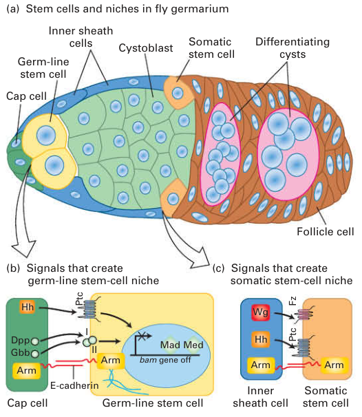
| Stem cells and niches in fly germarium | 果蝇生殖区中的干细胞与龛 |
| Signals that create germ-line stem-cell niche | 创建生殖系干细胞龛的信号 |
| Signals that create somatic stem-cell niche | 创建体细胞干细胞龛的信号 |
| Follicle cell | 卵泡细胞 |
| Somatic stem cell | 体细胞干细胞 |
| Inner sheath cell | 内鞘细胞 |
| Germ-line stem cell | 生殖系干细胞 |
| Cap cell | 帽细胞 |
| Cystoblast | 成包囊细胞 |
| Differentiating cyst | 分化中的包囊 |
| Dpp | Dpp |
| Gbb | Gbb |
| E-cadherin | E-cadherin |
| bam gene off | bam基因关闭 |
| Arm | Arm |
| Wg (Wingless) | Wg（Wingless） |
| Hh (Hedgehog) | Hh（Hedgehog） |
果蝇生殖系干细胞以及来自秀丽隐杆线虫的类似细胞的鉴定和表征之所以重要，是因为它们令人信服地证明了干细胞龛的存在，并使人们能够通过实验鉴定出那些使细胞成为并保持为自我更新干细胞的、由龛产生的信号。因此，干细胞龛是一组细胞及其产生的信号，而不只是一个位置。
肠道干细胞持续产生肠上皮的所有细胞
衬在小肠内表面的上皮只有一个细胞厚（见图20-11），由四种类型的分化细胞组成。最丰富的上皮细胞——吸收性肠上皮细胞（enterocyte）——把生存必需的营养物质从肠腔转运到体内（见图11-30）。肠上皮是成体哺乳动物中自我更新最快的组织，每5天更新一次；在人类中，每天有多达300,000,000个肠上皮细胞丢失，总重约1克。
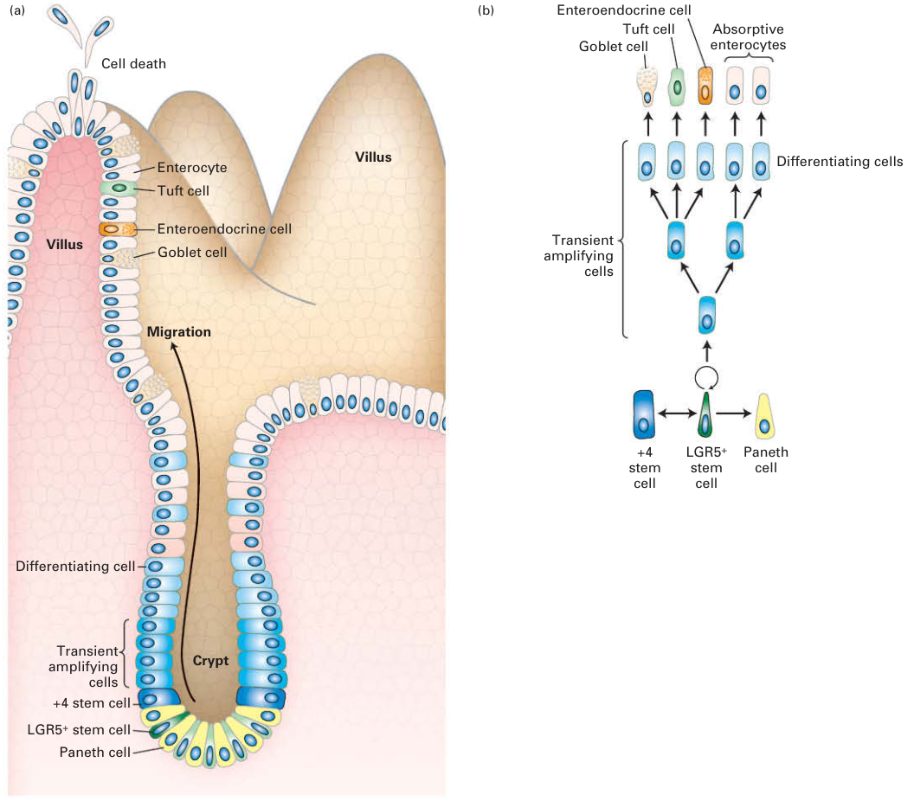
| Villus | 绒毛 |
| Crypt | 隐窝 |
| Migration | 迁移 |
| Absorptive enterocytes | 吸收性肠上皮细胞 |
| Enterocyte | 肠上皮细胞 |
| Goblet cell | 杯状细胞 |
| Tuft cell | 簇细胞 |
| Enteroendocrine cell | 肠内分泌细胞 |
| Paneth cell | 潘氏细胞 |
| Transient amplifying cells | 短暂扩增细胞 |
| Differentiating cell | 分化中的细胞 |
| Lgr5+ stem cell | Lgr5+干细胞 |
| +4 stem cell | +4干细胞 |
| Cell death | 细胞死亡 |
肠上皮的细胞由一群位于肠壁深处、称为隐窝的凹坑中的干细胞持续再生（图21-13）。使用放射性标记胸苷的脉冲-追踪实验表明肠道干细胞产生的前体细胞快速分裂，然后沿着隐窝侧壁上移时分化，形成称为绒毛的指状肠道突起的表面层，肠道吸收即在该表面进行。从隐窝中细胞诞生到绒毛顶端死细胞脱落，仅约3至5天（图21-14）。新细胞的产生受到精确控制：分裂太少会消除绒毛并导致肠表面崩解；分裂太多会生成过大的上皮，也可能是通向癌症的一步。
诸如"图21-14"所描绘的实验提示，肠道干细胞位于隐窝底部附近的某处，靠近称为潘氏细胞的分化肠道细胞。但这些推定的干细胞没有任何能显示其非凡能力的特殊形态特征；哪些细胞才是真正的肠道干细胞，哪些是构成龛的支持细胞？
先前的遗传学实验已表明，Wnt信号对肠道干细胞的维持必不可少。作为这些信号重要性的证据，肠道细胞中活性β-catenin（通常由Wnt信号通路激活；见图16-30）的过量产生会导致肠上皮过度增殖。反过来，通过突变或抑制Wnt激活的TCF转录因子来阻断β-catenin的功能，会消除肠道中的干细胞，导致肠道退化和最终死亡。因此，Wnt信号在肠道干细胞龛中起关键作用，就像它在皮肤、血液和其他器官中那样。事实上，不适当地激活Wnt信号通路的突变是结肠癌进展的主要促成因素，正如我们将在第24章看到的。
通过分析一组在肠道中其表达受Wnt信号诱导的基因，研究者把目标锁定在Lgr5上，它编码一种G蛋白偶联受体，因为该基因只在隐窝最底部的一小群细胞中表达。Lgr5结合一类称为R-spondin的分泌激素，并激活胞内信号通路，从而增强Wnt信号。谱系追踪研究表明，这些表达Lgr5的细胞的子代确实产生了所有分化的肠上皮细胞（图21-15）。这些研究利用了经过遗传改造的小鼠，其中把一种Cre重组蛋白（见图6-39）——即雌激素受体（ER）-Cre重组酶嵌合体——置于Lgr5启动子的控制之下；因此ER-Cre重组酶嵌合体只在隐窝底部少数推定的表达Lgr5的干细胞中产生。研究中使用的这种Cre重组酶已被改造，使其失活地驻留在胞质中，只有在加入雌激素类似物后才被转移到细胞核内（图21-15a）。在核内，Cre切除一段DNA，激活β-半乳糖苷酶报告基因的表达。重要的是，这些细胞的所有子代也都将表达β-半乳糖苷酶。加入雌激素类似物后立即观察，唯一表达β-半乳糖苷酶的是隐窝中的干细胞。但几天之后，所有子代上皮细胞也都表达了β-半乳糖苷酶（图21-15b），表明Lgr5的表达确实是肠道干细胞的标志物。
在随后的研究中，单个表达Lgr5的干细胞从肠隐窝中分离出来，培养在含有IV型胶原和层粘连蛋白的细胞外基质（见图20-23）上，该基质与通常位于肠上皮下方并支撑肠上皮的基质相似。这些细胞生成了绒毛样结构，其中含有成熟肠上皮中存在的全部四种分化细胞类型（图21-16）。综合起来，这些实验确立了Lgr5基因的表达界定了肠道干细胞，并表明这些细胞位于肠隐窝底部，散布在终末分化的潘氏细胞之间（见图21-13）。表达Lgr5的细胞也存在于胃、结肠和胰腺中——这些器官与小肠一样由胚胎内胚层形成——并被认为是这些组织的干细胞。事实上，在Wnt、R-spondin和其他激素存在下培养来自这些组织的表达Lgr5的细胞，可生成含有这些组织特征性分化细胞的微型类器官。
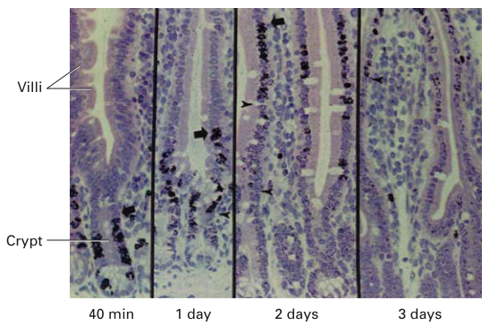
| Villi | 绒毛 |
| Crypt | 隐窝 |
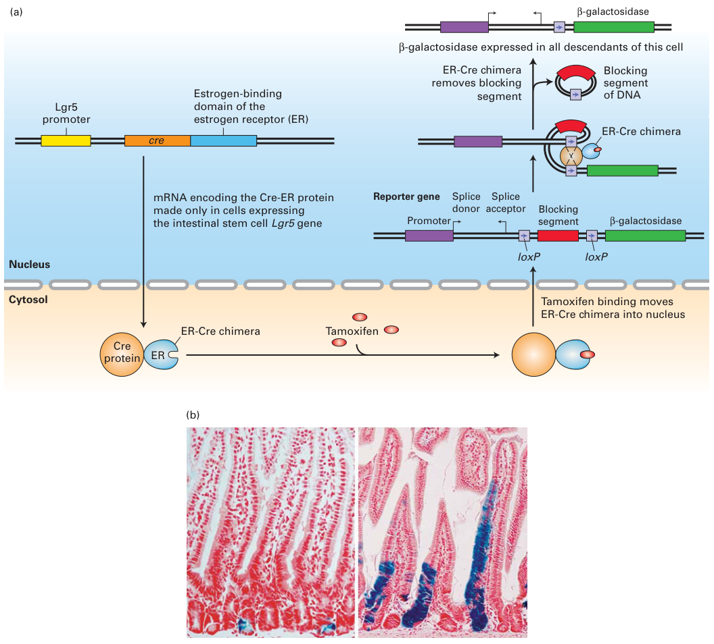
| Estrogen-binding domain of the estrogen receptor (ER) | 雌激素受体的雌激素结合结构域 |
| ER-Cre chimera | ER-Cre嵌合体 |
| Cre protein | Cre蛋白 |
| Lgr5 promoter | Lgr5启动子 |
| Tamoxifen | 他莫昔芬 |
| Cytosol | 胞质 |
| Nucleus | 细胞核 |
| loxP | loxP |
| Blocking segment | 阻断片段 |
| Splice donor | 剪接供体 |
| Splice acceptor | 剪接受体 |
| Reporter gene | 报告基因 |
| Promoter | 启动子 |
| β-galactosidase | β-半乳糖苷酶 |
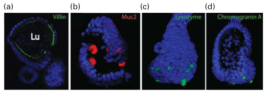
潘氏细胞比绒毛细胞寿命更长；它们产生几种抗菌蛋白，包括酶溶菌酶，后者降解细菌细胞壁，从而保护肠道免受感染。最近令人惊讶的证据提示，潘氏细胞还构成了肠道干细胞龛的主要部分。培养的潘氏细胞产生Wnt以及维持肠道干细胞所必需的其他激素，如表皮生长因子（EGF）和一种Delta蛋白（见第16章）。将肠道干细胞与潘氏细胞共培养，显著改善了肠道绒毛样结构的形成；而在小鼠中进行导致潘氏细胞数量减少的遗传操作，同时也导致肠道干细胞减少。因此，潘氏细胞——它们是肠道干细胞的子代细胞——构成了肠道干细胞维持所需龛的大部分（即使不是全部）。
表达Lgr5的细胞可能不是唯一的肠道干细胞类型。有证据表明，位于隐窝中的所谓+4细胞（见图21-13a）可能是"储备干细胞"，能在肠道损伤（如照射）后产生表达Lgr5的干细胞。反过来，这些+4细胞也可由表达Lgr5的干细胞产生（见图21-13b）。回忆一下，短暂扩增细胞的自我更新潜能有限（见图21-10）。在肠道损伤期间，当许多表达Lgr5的干细胞丢失时，一些短暂扩增细胞在Wnt信号的影响下可以"去分化"，回复为表达Lgr5的干细胞并重新定位到潘氏细胞龛！因此，分化细胞转变为干细胞——正如在iPS细胞形成过程中实验所见——可能在应激或损伤期间正常发生于体内。因此，肠道似乎并不依赖单一的从干细胞到分化细胞的谱系（见图21-13b），而是能够动用几个储备干细胞群体池。未来的工作无疑将阐明这些细胞在肠道上皮细胞生成中的作用。
造血干细胞形成所有血细胞
另一种持续补充的组织是血液，其干细胞在动物胚胎期位于胚胎肝，在成体中位于骨髓。各种类型的血细胞都源自单一类型的多潜能、自我更新的造血干细胞（HSC）。一个HSC产生另外两种多潜能细胞类型——共同髓系祖细胞和共同淋系祖细胞，它们命运更为受限，但具有有限的自我更新能力（图21-17）。众多称为细胞因子的胞外生长因子调控HSC的自我更新分裂，也调控各种血细胞谱系前体细胞的增殖和分化。血细胞谱系树的每一分支都有不同的细胞因子调控者，从而可以精细控制特定细胞类型的产生。如果需要所有类型的血细胞——例如在出血性损伤之后——可以产生多种细胞因子。如果只需要一种细胞类型，特定的信号就控制其产生。例如，当人处于高海拔旅行时，肾脏产生促红细胞生成素，刺激CFU-E（红系祖细胞）的增殖和分化，但不刺激其他类型的血细胞前体。促红细胞生成素激活若干不同的胞内信号转导通路，导致基因表达变化，促进红细胞的形成（见图16-7和图16-8）。类似地，另一种细胞因子G-CSF刺激双潜能粒细胞-巨噬细胞祖细胞的增殖及其向粒细胞的分化，而M-CSF刺激同一种祖细胞类型产生巨噬细胞。
造血干细胞最初是通过骨髓移植实验在造血干/祖细胞已被照射清除的小鼠中检出并定量的（图21-18）。通过把特定类型的造血前体移植到这些小鼠体内并观察哪些血细胞得到恢复，研究者可以推断哪些前体或终末分化细胞（例如红细胞、单核细胞）来自某一特定类型的前体。第一步是分离不同类型的前体。之所以能进行这种分选，是因为HSC和每一种前体都产生独特的细胞表面蛋白组合，可作为细胞类型特异性的标志物。如果用荧光染料标记的抗体处理骨髓提取物以检测这些标志物，便可在荧光激活细胞分选仪（FACS；见图4-2和图4-3）中分离带有不同标志物的细胞。值得注意的是，这类移植实验揭示，把单个HSC转移到受过致死剂量照射的小鼠体内——其中所有HSC都已被杀死——就足以重建整个血液系统。移植后，HSC在骨髓的一个龛中定居下来，并分裂产生更多HSC以及不同血细胞谱系的祖细胞。
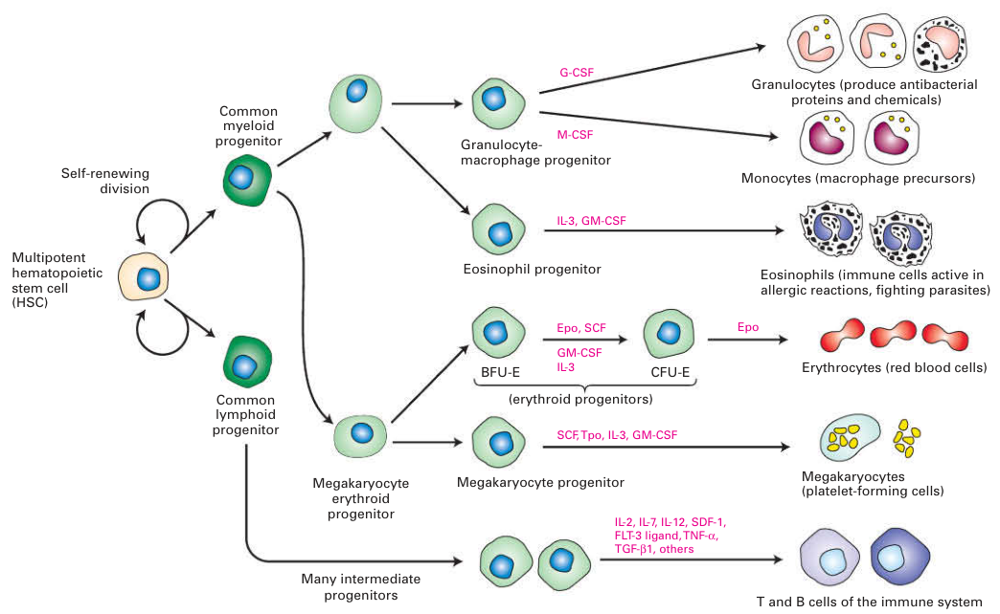
| Multipotent hematopoietic stem cell (HSC) | 多潜能造血干细胞（HSC） |
| Self-renewing division | 自我更新分裂 |
| Common myeloid progenitor | 共同髓系祖细胞 |
| Common lymphoid progenitor | 共同淋系祖细胞 |
| Erythrocytes (red blood cells) | 红细胞 |
| Monocytes (macrophage precursors) | 单核细胞（巨噬细胞前体） |
| Granulocytes | 粒细胞 |
| T and B cells of the immune system | 免疫系统的T细胞和B细胞 |
| Granulocyte-macrophage progenitor | 粒细胞-巨噬细胞祖细胞 |
| Eosinophils | 嗜酸性粒细胞 |
| Eosinophil progenitor | 嗜酸性粒细胞祖细胞 |
| Megakaryocytes (platelet-forming cells) | 巨核细胞（形成血小板的细胞） |
| Megakaryocyte progenitor | 巨核细胞祖细胞 |
| Megakaryocyte erythroid progenitor | 巨核细胞-红系祖细胞 |
| BFU-E | BFU-E |
| CFU-E (erythroid progenitors) | CFU-E（红系祖细胞） |
| Epo | 促红细胞生成素 |
| Many intermediate progenitors | 许多中间祖细胞 |
首例成功的人类骨髓移植于1959年实施，当时一位患终末期（致死性）白血病的患者接受照射，以摧毁她的癌细胞以及她自身的正常HSC。她接受了来自其同卵双胞胎姐妹的骨髓细胞输注，从而避免了免疫反应，并获得了3个月的缓解。这项开创性工作于1990年被授予诺贝尔医学奖，它带来了今日常常能完全治愈多种癌症的疗法。移植骨髓中的干细胞能产生所有类型的功能性血细胞，因此移植对某些遗传性血液病患者有用，包括许多遗传性贫血（红细胞水平不足）或血液细胞的遗传缺陷，如镰状细胞病（一种血红蛋白病），对接受过照射或化疗的癌症患者也有用，这两种治疗在摧毁癌细胞的同时也摧毁骨髓细胞。■
在胚胎期，HSC常进行对称分裂，产生两个女儿干细胞（见图21-11）；这一过程使干细胞数目随时间增加，并产生出生前制造所有必需血细胞所需的大量祖细胞。在成体动物中，HSC大多处于静息状态，"停驻"于骨髓干细胞龛的G0期。当需要更多血细胞时，会产生细胞因子，向HSC发出分裂信号，产生与亲代细胞一样的干细胞以及快速增殖的短暂扩增细胞，后者生成图21-17所示的祖细胞。单个HSC究竟进行对称分裂还是不对称分裂，尚不清楚。
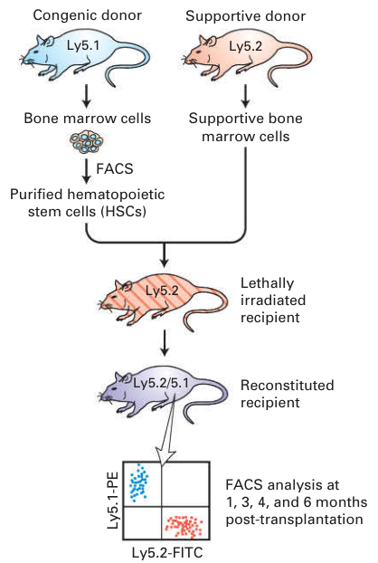
| Congenic donor | 同类系供体 |
| Supportive donor | 支持供体 |
| Bone marrow cells | 骨髓细胞 |
| Supportive bone marrow cells | 支持性骨髓细胞 |
| Purified hematopoietic stem cells (HSCs) | 纯化的造血干细胞（HSC） |
| Lethally irradiated recipient | 致死剂量照射的受体 |
| Reconstituted recipient | 重建的受体 |
| FACS | FACS |
| FACS analysis at 1, 3, 4, and 6 months post-transplantation | 移植后1、3、4和6个月的FACS分析 |
| Ly5.1 | Ly5.1 |
| Ly5.2 | Ly5.2 |
| Ly5.2/5.1 | Ly5.2/5.1 |
| Ly5.2-FITC | Ly5.2-FITC |
| Ly5.1-PE | Ly5.1-PE |
稀有类型的细胞构成造血干细胞的龛
与所有干细胞一样，造血干细胞存在于龛中。在胚胎发育晚期，HSC存在于胎肝中；在成体中，大多数定位于骨髓。但鉴定HSC以及构成HSC龛的细胞非常复杂。HSC的频率约为每104个骨髓或胎肝细胞中1个。
此外，用移植实验以外的任何技术鉴定HSC都很困难，因为没有任何细胞表面蛋白是HSC专一表达的，因此没有可用的标志物。大量工作表明，HSC可以被前瞻性地鉴定和纯化，因为它们表达一种称为CD150的细胞表面蛋白（功能未知），并且不表达其他类型造血祖细胞和分化细胞所特有的十几种"Lin"（谱系受限）蛋白中的任何一种。
鉴定龛细胞的努力利用了一个事实：HSC存活需要一种称为干细胞因子（SCF）的生长因子；该蛋白结合在相邻信号细胞的表面，激活HSC上的c-Kit蛋白酪氨酸激酶受体。HSC还需要分泌蛋白血小板生成素，后者激活的结构与功能均类似于促红细胞生成素受体的血小板生成素受体；以及CXCL12，它结合G蛋白偶联受体，是把HSC留在龛中所必需的。在胎肝中，只有产生肝细胞（肝脏的主要细胞类型）的祖细胞表达这三种蛋白以及HSC存活所需的其他蛋白。把这些肝祖细胞与HSC共培养，可导致HSC数量扩增并形成其分化子代。因此，肝细胞祖细胞被发现是胎肝中构成HSC龛的主要细胞。
在成体中，少数间充质细胞围绕着贯穿骨髓的、称为血窦的小血管。这些称为基质细胞（stromal cell）的细胞，其表面表达SCF以及细胞因子瘦素的受体。它们还合成大量CXCL12，被认为是骨髓中主要的HSC龛细胞（图21-19a）。免疫荧光分析显示，约85%的HSC与这些基质细胞有物理接触（图21-19b）。骨髓中的其他细胞可能通过释放其他类型的激素来影响干细胞维持或龛的功能。
你可能已经注意到，我们讨论过的所有干细胞分子调控因子都是熟悉的蛋白（见第15章和第16章），而不是专门从事干细胞控制的专职调控因子。每一类信号都被反复用来控制细胞命运和生长。干细胞受到古老的信号系统调控，这些系统至少有5亿年历史，随着细胞、组织、器官和动物演化出新的变异，它们也出现了新的用途。
分生组织是植物干细胞的龛
在植物中，如同在其多细胞动物对应物中一样，所有组织和器官的产生都依赖于小群干细胞。与动物干细胞一样，这些干细胞的特征在于能够进行自我更新并产生生成分化组织的女儿细胞。而且与动物干细胞一样，植物干细胞也驻留于特化的微环境——干细胞龛——中，那里产生维持干细胞处于多潜能状态的胞外信号。由于植物和动物的最近共同祖先是一个单细胞真核生物，看来尽管有共同的组织原理，植物和动物中的干细胞及其龛是独立地、通过不同途径演化出来的——这是趋同演化的一个例子。
植物干细胞所在的龛称为分生组织，在诸如芒松（bristlecone pine）这样的长寿物种中可以持续数千年。植物的体轴由胚胎发生过程中建立的两个初级分生组织界定：茎端分生组织和根端分生组织。与动物发育不同，植物胚胎发生过程中被指定的组织或器官极少。相反，叶、花乃至生殖细胞等器官是随着植物的生长和发育而持续产生的。植物的地上部分源自茎端分生组织，地下部分源自根端分生组织。经典的克隆分析实验已证明植物细胞命运取决于细胞的位置，而非其谱系。细胞的同一性由细胞间信号强化，例如激素、可移动的信号肽和miRNA。■
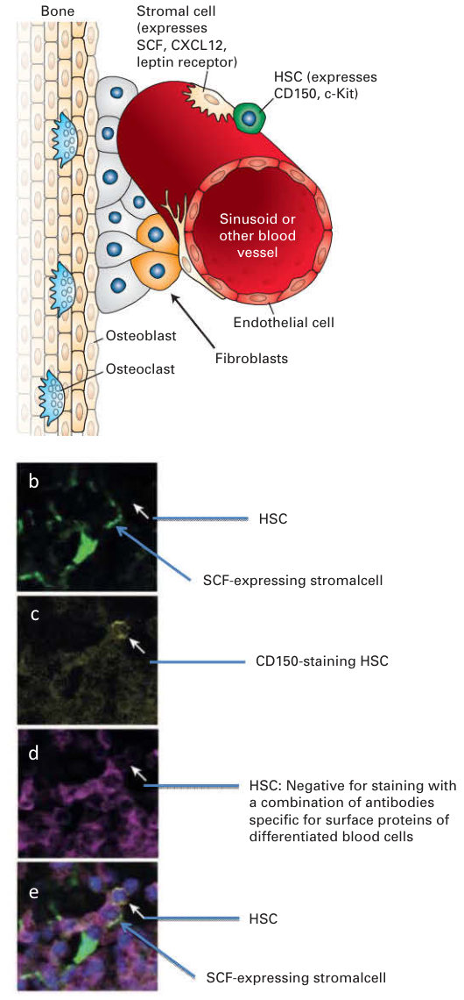
| Stromal cell (expresses SCF, CXCL12, leptin receptor) | 基质细胞（表达SCF、CXCL12、瘦素受体） |
| SCF-expressing stromal cell | 表达SCF的基质细胞 |
| CD150-staining HSC | CD150染色的HSC |
| HSC (expresses CD150, c-Kit) | HSC（表达CD150、c-Kit） |
| Endothelial cell | 内皮细胞 |
| Fibroblasts | 成纤维细胞 |
| Sinusoid or other blood vessel | 血窦或其他血管 |
| Osteoblast | 成骨细胞 |
| Osteoclast | 破骨细胞 |
| Bone | 骨 |
与后生动物的体细胞干细胞不同，植物的体细胞干细胞产生的是整个器官，而不只是特定的组织或谱系。分裂缓慢的多能性干细胞位于茎端分生组织的顶端，外围则是分裂更快的多潜能短暂扩增女儿细胞。茎干细胞的子代被推向分生组织外围，并被招募形成新器官（包括叶和茎）的原基。当这些细胞获得特定细胞类型的特征时，分裂便停止，而大部分器官生长通过细胞扩张和伸长实现（图21-20a）。新的茎干细胞龛可以在叶原基的叶腋中形成，随后生长形成侧枝。花分生组织产生四种花器官——萼片、雄蕊、心皮和花瓣——它们构成花。与茎端分生组织不同，花分生组织在产生花器官的过程中逐渐耗竭。
负反馈环维持茎端干细胞群体的大小
干细胞身份、维持和细胞分化所需的基因，是通过在芥科杂草拟南芥（Arabidopsis thaliana）中筛选表现为分生组织变大、变小或不能补充的突变体（见图1-22h）而确定的，也通过最近对分离出的分生组织细胞群体进行的基因表达谱研究而确定。茎端分生组织的一个决定因子是称为WUSCHEL（WUS）的基因，它编码一个同源域转录因子（见第9章）。WUS是维持干细胞群体所必需的，但它表达于干细胞下方的支持细胞中。这些细胞统称为组织中心，类似于后生动物中的龛细胞（见图21-20a）。虽然WUS的mRNA和蛋白在组织中心细胞中合成，但一系列实验表明，WUS从组织中心细胞移动到干细胞中，推测是通过相互连通的胞间连丝（见图20-41）。在一项研究中，把WUS-GFP融合蛋白在WUS阴性的拟南芥植株中表达，能够拯救突变表型。随后的显微分析显示，这种WUS-GFP嵌合体在干细胞中积累，表明它是从组织中心细胞移动到那里的。
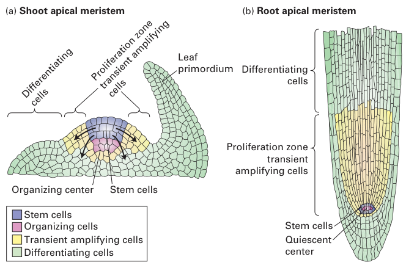
| Shoot apical meristem | 茎端分生组织 |
| Root apical meristem | 根端分生组织 |
| Organizing center | 组织中心 |
| Organizing cells | 组织细胞 |
| Quiescent center | 静止中心 |
| Stem cells | 干细胞 |
| Transient amplifying cells | 短暂扩增细胞 |
| Proliferation zone transient amplifying cells | 增殖区短暂扩增细胞 |
| Differentiating cells | 分化中的细胞 |
| Leaf primordium | 叶原基 |
一旦进入干细胞，WUS便结合基因组中的许多位点；它抑制大量在分化细胞中表达的基因，包括一组叶发育所需、促进分化的转录因子。WUS还直接激活干细胞中CLAVATA3（CLV3）的表达。CLV3编码一种小的分泌肽，它结合组织中心细胞表面的CLV1受体，产生一种负向调控WUS表达的胞内信号。WUS的过量表达会导致分生组织干细胞群体大幅扩张，代价是分化细胞的产生减少。因此，一个转录因子WUS与一个信号肽CLV3之间的负反馈环，在植物的一生中维持着干细胞群体的大小及其分裂女儿细胞的数量（图21-21）。■
还有几种转录调控蛋白对茎端和根端分生组织细胞的正常功能都必不可少，包括人视网膜母细胞瘤（Rb）肿瘤抑制蛋白（见第24章）在植物中的同源物RBR。与动物细胞一样，RBR结合并抑制一个E2F转录因子的功能；RBR从E2F上释放或RBR的遗传缺失，使E2F因子得以促进多个促进入细胞周期和细胞分裂的基因的转录（见图19-12b）。RBR水平降低导致干细胞数量增加，RBR水平升高则导致干细胞分化；这两个观察结果都表明RBR在干细胞维持中起显著作用。
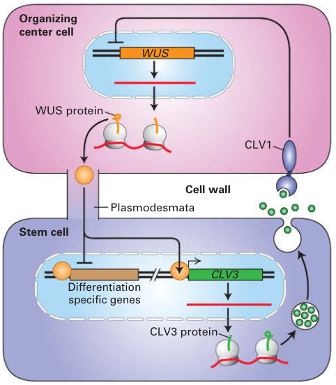
| WUS protein | WUS蛋白 |
| WUS | WUS |
| CLV3 protein | CLV3蛋白 |
| CLV3 | CLV3 |
| CLV1 | CLV1 |
| Organizing center cell | 组织中心细胞 |
| Stem cell | 干细胞 |
| Plasmodesmata | 胞间连丝 |
| Cell wall | 细胞壁 |
| Differentiation specific genes | 分化特异性基因 |
根端分生组织在结构和功能上类似于茎端分生组织
与茎端分生组织不同，根端分生组织由谱系受限的干细胞组成。这些细胞围绕静止中心组织起来，静止中心是四个分裂极慢的细胞，充当干细胞龛（图21-20b）。干细胞分裂是不对称的（这一点也与茎端不同），失去与静止中心接触的那个女儿细胞再分裂数次，然后分化。一个WUS同源物WOX5在静止中心中表达，是干细胞维持所必需的，不过其他转录因子也很重要。植物激素生长素（吲哚-3-乙酸）协调植物生长和分化涉及的许多过程；特别是，它对根端分生组织龛的形成必不可少。如果静止中心被消融，在高生长素浓度区域会形成一个新的龛。然而，生长素对干细胞的作用取决于具体的细胞类型。例如，在产生根冠的干细胞中，生长素通过生长素响应转录因子抑制WOX5，从而促进细胞分化。
植物具有惊人的再生能力。家庭园丁会熟悉叶插或茎插只需一杯水和一扇阳光充足的窗台、几乎不需其他诱导就能生根的能力。20世纪中期进行的实验证明，从胡萝卜根中分离出的单个细胞置于含有适当营养和激素配比的培养基上时，能再生出完整的植株。在那之后，一个常被引用的植物细胞与动物细胞的主要区别是：所有植物细胞都是全能性的。然而今天，随着我们从分化的动物细胞生成iPS细胞的能力，以及对参与植物再生的细胞进行更细致的分析——这些分析提示再生组织来自预先存在的干细胞群体，而不是通过去分化过程——这一区别正变得模糊。■
- 涡虫含有多能性干细胞，称为cNeoblast，对截肢去除的身体部位的再生很重要。
- 动物中大多数干细胞是多潜能性的，但生殖系干细胞是单能性的。
- 干细胞未分化；它们可进行对称或不对称的自我更新分裂，使其数量在生物体一生中保持恒定或增加（见图21-11）。
- 干细胞形成于龛中，龛提供信号以维持一群未分化干细胞；该龛必须在不让干细胞过度增殖的前提下维持干细胞，并阻断分化。
- 干细胞通过在龛中起作用的特定控制机制被阻止分化。Wnt信号通路的一个组分β-catenin的高水平，被认为通过把细胞导向自我更新分裂而非分化状态，来保存生殖系和肠道中的干细胞。
- 在果蝇生殖区中，少数细胞构成生殖干细胞龛，直接向相邻的干细胞发送信号。被移出龛细胞的女儿细胞进行增殖并分化为生殖细胞（见图21-12）。
- 与肠上皮以及许多其他组织相关的干细胞群体，能再生受损、脱落或衰老的分化组织细胞（见图21-13）。
- 肠道干细胞驻留于肠隐窝底部，紧邻潘氏细胞，后者构成龛的一部分；肠道干细胞以表达Lgr5受体为标志（见图21-13）。
- 在血细胞谱系中，不同类型的前体在各自不同的细胞因子控制下形成并增殖（见图21-17）。该系统使身体能够特异性地诱导某些或全部所需血细胞类型的补充。
- 造血干细胞可通过骨髓移植实验检出并定量（见图21-18），其龛细胞可通过一组标志表面蛋白的组合来检测（见图21-19）。
- 植物干细胞在分生组织中持续存在植物的一生。分生组织细胞能产生广谱的细胞类型和结构（见图21-20）。
- 一个涉及WUS转录因子的负反馈环维持茎端干细胞群体的大小。
21.4 细胞极性机制与不对称细胞分裂
我们已经讨论过不对称分裂在发育过程中产生细胞多样性以及维持群体中干细胞数量方面的重要性。细胞在分裂之前就变得不对称、从而产生具有不同命运的细胞，其能力背后的机制是什么？细胞不对称性是我们以前遇到过的概念，当时称为细胞极性，所以让我们先回顾一下一个细胞处于极化状态意味着什么。
细胞极性——细胞组织其内部结构、从而导致细胞形状改变并产生具有不同蛋白质和脂质组成的质膜区域的能力——已在好几章中介绍过。例如，我们已经看到，极化的肠上皮细胞具有一个顶端结构域，其中富含微绒毛，并通过紧密连接与基底外侧结构域隔开（见图17-1和图20-11）。上皮运输要求这些细胞在顶端膜和基底外侧膜中具有不同的转运蛋白（见图11-30）。正如我们将在本节后面看到的，这些上皮细胞是在响应细胞外信号，这些信号指示它们如何极化。这些细胞只是细胞极性的一个例子——动物中几乎所有的细胞都是极化的，我们将讨论几个已经阐明其潜在机制的例子。由此得出细胞极性的三条核心原则。第一，细胞具有内在的极性程序，这从它们在缺乏外部线索时仍能极化的非凡能力可以看出。正如我们将在例子中看到的，该程序的一个共同的主调控因子是小GTP酶Cdc42。第二，这一内在极性程序可以被外部或内部线索所引导。第三，单个细胞的极性通常由细胞内相互拮抗的复合物来维持。我们首先讨论芽殖酵母中的内在极性程序，因为该机制的所有组分都与动物共有，所以在酵母中发现的原理很可能是保守的。然后，我们将讨论一些例子，其中的细胞响应外部线索，依赖拮抗性相互作用来建立细胞极性。最后，我们讨论一个不对称细胞分裂的例子，它产生一个子代干细胞和一个分化细胞。
内在极性程序依赖于一个涉及Cdc42的正反馈环
芽殖酵母通过在表面选择单个位点来组装新芽而生长（见图19-3）。重要的是，它必须可靠地只选择一个位点。如果一个细胞同时长出两个芽，请设想有丝分裂期间会发生什么：复制的染色体可能被分配到母细胞和一个芽之间，使另一个芽得不到染色体，因而无法存活。在单倍体酵母中，这种所谓的出芽单一性由一个留在细胞表面的信号（线索）所引导，它把下一次出芽事件引向与上一次出芽位点相邻的位点。值得注意的是，如果删除那些编码该线索非必需组分的基因，酵母细胞生长得一样好，但每个细胞都在随机位点组装单个芽。这一结果揭示，酵母拥有一个内在的极性程序，即使没有来自上一个出芽周期的线索，它也能引导选择单个位点进行芽的生长。该程序需要Cdc42在芽将从中长出的位点浓集。
令人惊讶的是，新芽位点上Cdc42的浓集并不依赖于肌动蛋白丝或微管，因为即使两种纤丝系统都被破坏，这种小GTP酶仍然定位于单个位点（图21-22a）。早在生物学家思考这可能是如何发生之前，杰出的数学家和计算机先驱Alan Turing就考虑过，什么样的机制可以把极性因子的均匀分布转变为在单个位点上的浓集。1952年，Turing提出，如果正反馈反应能放大极性因子浓度的随机升高，就可以实现这样的转变——他确实说对了！
回忆一下，Cdc42是Rho家族小GTP结合蛋白的成员（见图17-41）。它作为分子开关，存在无活性（Cdc42⋅GDP）和有活性（Cdc42⋅GTP）两种状态。与其特异的鸟嘌呤核苷酸交换因子（Cdc42-GEF）结合，使Cdc42释放GDP并结合GTP。有活性的Cdc42⋅GTP结合效应蛋白，从而激活下游信号事件。在无活性状态下，Cdc42⋅GDP处于平衡之中，在结合鸟嘌呤核苷酸解离抑制因子（GDI）的胞质池与膜结合的Cdc42⋅GDP池之间分配（图21-22b）。偶尔且随机地，膜结合的Cdc42⋅GDP会释放其GDP并结合GTP，这使它转变为有活性的Cdc42⋅GTP状态（图21-22b，步骤1）。被招募到Cdc42⋅GTP的效应蛋白之一是含有Cdc42-GEF的蛋白复合物（步骤2）。因此，当质膜上出现一个有活性的Cdc42时，它招募Cdc42-GEF，后者局部激活更多的Cdc42，后者又招募更多的Cdc42-GEF，这个简单的正反馈环在细胞表面产生一个高度局部富集Cdc42⋅GTP的位点（步骤3和4）。计算建模——同样由Turing开创——表明该系统可以导致"赢者通吃"的局面，只产生一个极化位点。这个正反馈环是在酵母中产生一个非常稳定的出芽位点的核心机制。
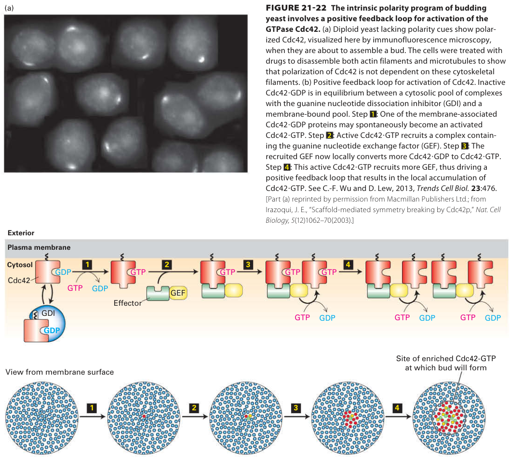
| Plasma membrane | 质膜 |
| Cytosol | 胞质 |
| Exterior | 外侧 |
| Cdc42 | Cdc42 |
| Effector | 效应蛋白 |
| GEF | GEF（鸟嘌呤核苷酸交换因子） |
| GDI | GDI（鸟嘌呤核苷酸解离抑制因子） |
| Site of enriched Cdc42-GTP at which bud will form | 将形成芽的Cdc42-GTP富集位点 |
| View from membrane surface | 从膜表面观察 |
正如我们在第18章看到的，Cdc42也是引导迁移细胞极化的主调控因子（见图18-53），其中一种类似的反馈环很可能也存在。正如我们将看到的，Cdc42参与调控许多其他的细胞极性例子。重要的是，在极化需要更灵活的情况下，负反馈环确保单个极化位点不会太强，从而在接收到适当信号时，它可以被重新导向细胞表面的另一个位点。例如，除了作用快速的GEF外，Cdc42⋅GTP可能还招募一个作用缓慢的负调控因子，来调节正反馈的程度。事实上，酵母Cdc42招募一种激酶，它磷酸化并抑制被招募的Cdc42-GEF，从而引入一个负反馈环。因此，Cdc42⋅GTP的局部浓度快速升高，随后随着较慢的负调控因子发挥作用而趋于平稳或消失。这些正、负反馈环的生化基础是当前研究活跃而重要的领域。正如我们将看到的，特定的线索通常引导这些内在极性程序，进而导致细胞的物理极化。
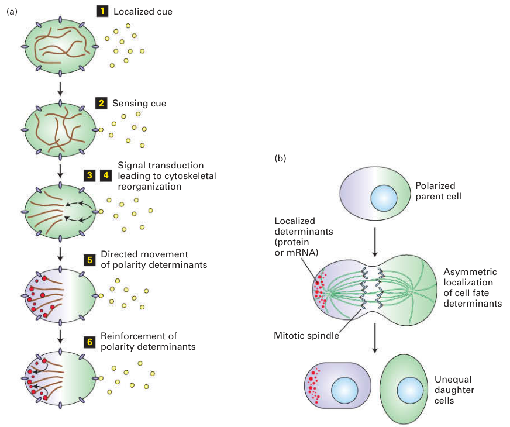
| Localized cue | 局部线索 |
| Sensing cue | 感受线索 |
| Signal transduction leading to cytoskeletal reorganization | 导致细胞骨架重组的信号转导 |
| Polarized parent cell | 极化的母细胞 |
| Mitotic spindle | 有丝分裂纺锤体 |
| Asymmetric localization of cell fate determinants | 细胞命运决定因子的不对称定位 |
| Localized determinants (protein or mRNA) | 定位的决定因子（蛋白质或mRNA） |
| Directed movement of polarity determinants | 极性决定因子的定向移动 |
| Reinforcement of polarity determinants | 极性决定因子的强化 |
| Unequal daughter cells | 不均等的子细胞 |
细胞分裂前的细胞极化遵循共同的步骤层级
细胞无论是否进行分裂，其极化都遵循图21-23a所示的总体模式。为了知道朝哪个方向极化（或变成不对称），细胞通常感受特定的线索，这些线索为它提供空间信息（步骤1）。正如我们将看到的，这类线索可以是来自其他细胞或细胞外基质的可溶性信号。为了能接收这些线索，细胞表面必须具有适当的受体或其他机构（步骤2）。一旦检测到线索，细胞便通过把传入信号输入其极性程序来作出响应，从而确定极性的取向（步骤3）。通常下一步涉及细胞骨架元件（特别是微丝和微管）的局部重组（步骤4）。一旦细胞具有结构上的不对称性，分子马达便将极性因子——取决于系统，这些因子可能是胞质蛋白，也可能是由分泌途径合成的膜蛋白，或两者兼有——运输到它们适当的位置（步骤5）。极性常常可以通过把极性决定因子从浓度较低的位点移回极化位点、以维持该处最高浓度而得到增强或维持（步骤6）。
如果一个细胞发生极化，随后细胞分裂发生在垂直于极化方向的平面上，那么这个细胞就进行了不对称细胞分裂。通过这种方式，命运决定因子（如特定的蛋白质或mRNA）可以在细胞之间被差异性地分配（图21-23b）。
细胞极化可以是一个高度动态的过程。设想一个巨噬细胞追赶细菌，以便通过吞噬作用捕获并消灭它：巨噬细胞必须持续地感受细菌，它是通过追随细菌留下的肽梯度来做到这一点的（见图17-46）。这一信号使巨噬细胞定向——或者说极化——从而朝正确的方向移动。这个例子突显了细胞极性一个重要而常见的方面：在许多情况下，它必须是动态的，以便像巨噬细胞的例子那样能够迅速改变方向。尽管我们以巨噬细胞为例说明了细胞极性的动态性，但上皮细胞以及其他看起来非常静态的细胞，当它们被移动到不同环境时，其极性很可能也相当动态。
在下一节中，我们讨论一个表现出不对称性的简单细胞：交配过程中响应可溶性线索的酵母细胞。在随后的几节中，我们转向动物细胞，其中保守的极性蛋白在解读极性线索以及在细胞分裂之前产生细胞不对称性方面起着关键作用。然后我们描述这些相同的极性蛋白如何被用来使上皮细胞极化。最后，我们讨论干细胞中不对称分裂的若干方面。
极化的膜运输使酵母在交配过程中不对称生长
最简单、研究得最透彻的细胞不对称形式之一发生在芽殖酵母细胞交配时。正如我们已经看到的，酵母可以以单倍体状态（每条染色体一个拷贝）或二倍体状态（每条染色体两个拷贝）存在。单倍体状态可以是两种交配型（"性别"）之一，即a或α。酵母在自然界中偏好的状态是二倍体状态，所以a细胞总是寻求与α细胞交配，以恢复二倍体状态（见图1-23）。每种交配型都分泌一种特定的交配信息素——a细胞分泌a因子，α细胞分泌α因子——并且每种都在其表面表达一种受体，用以感受相反交配型的信息素。因此a细胞有α因子的受体，α细胞有a因子的受体。当相反交配型的细胞被放在彼此附近时，每个细胞上的受体结合并检测另一个细胞的信息素线索，测定其空间上的最高浓度，以了解朝哪个方向交配。当细胞检测到相反的交配因子时，会发生两个重要过程。第一，它们通过在G0期阻滞来使细胞周期同步，这样当它们交配时，两个单倍体基因组将处于细胞周期的同一阶段。第二，它们把细胞生长导向信息素的方向，以组装一个称为shmoo的交配突起。如果相反交配型的正在形成shmoo的细胞相互接触，它们就在shmoo顶端融合，两个单倍体核结合在一起，恢复二倍体状态。
通过寻找那些不能响应相反交配信息素形成shmoo的酵母单倍体突变体，研究人员发现了shmoo形成所必需的不对称生长是如何发生的（图21-24）。正如可以预料的那样，这一机制起初涉及一条建立极化细胞骨架的信号转导途径，该骨架反过来把膜运输引导到不对称生长的适当位置。交配因子受体的激活——一个典型的G蛋白偶联受体（见图15-12）——导致内在极性程序被激活，进而导致Cdc42在细胞皮层中最靠近信息素来源的区域局部积累并活化（图21-24，步骤1）。这些有活性的Cdc42⋅GTP导致一种formin蛋白的局部激活（步骤2）。正如我们在第17章看到的，formin蛋白成核组装极化的肌动蛋白丝，其(+)端保持与formin结合（见图17-13）。这一过程提供了轨道，供肌球蛋白V马达把分泌小泡运送到纤丝的(+)端，以实现局部生长，从而形成shmoo（步骤3）。请注意，这一机制要求包括Cdc42⋅GTP在内的极性蛋白持续集中在生长中的shmoo顶端。为确保在shmoo生长过程中极性得以维持，据信存在一个定向的内吞循环。在这个循环中，已经从浓集位点扩散开去的Cdc42可能被内吞作用内化，并被运回shmoo顶端，从而强化极性（步骤4）。
Par蛋白指导线虫胚胎中的细胞不对称性
线虫秀丽隐杆线虫（Caenorhabditis elegans）为理解细胞命运决定提供了一个强有力的模型系统。它被选作研究对象，是因为这种动物身体透明、生活周期短；容易产生和鉴定突变体；而且从单细胞胚胎到成体的细胞谱系是不变的（图21-25a、c、d）。一个关键方面是这个谱系中的第一次细胞分裂，其中P0细胞——受精卵，或称合子——通过不对称细胞分裂产生AB和P1细胞；这两个细胞随后各自产生不同的谱系。关于这第一次不对称分裂已经知道很多，这也是我们关注的重点。
在第一次细胞分裂之前，合子就已经明显不对称：称为P颗粒的胞质复合物浓集在将形成胚胎后端的细胞一端（图21-25b）。结果表明，在随后的细胞分裂中，这些P颗粒总是分配到将形成生殖系的细胞中，它们最终在生殖系发育中发挥重要作用。P0细胞的第一次不对称分裂产生含P颗粒的P1细胞和较大的AB细胞。此后，在两细胞期，有丝分裂纺锤体彼此成直角排列，因此随后的细胞分裂也彼此成直角（图21-26a）。为了初步理解这第一次至关重要的不对称分裂是如何发生的，人们鉴定出六个不同基因的突变，它们导致第一次分裂变成对称的。由于在这些突变体中P颗粒没有被正确地分配，这项研究鉴定出的基因被称为partition defective即par基因。在这些突变体中，P颗粒没有正确定位于合子的后端，而且有丝分裂纺锤体在为第二次分裂做准备时也没有正确取向（见图21-26a）。当par基因的产物被定位后，人们获得了关键的洞见。在野生型合子中，许多Par蛋白要么定位于细胞前半部的皮层，要么定位于后半部的皮层。例如，Par3（作为一个更大的复合物的一部分，该复合物包含Cdc42、Par3、Par6和aPKC——非典型蛋白激酶C）定位于前部，而Par2和Par1定位于后部（图21-26b）。后续工作表明，这些蛋白复合物之间存在相互拮抗的相互作用；也就是说，如果Cdc42-Par3-Par6-aPKC复合物定位于一个区域，它就排斥Par2，反之亦然。这一点由以下发现所证明：在par2突变体中，Par3-Par6-aPKC复合物铺展到整个皮层；而在par3或par6突变体中，Par2铺展到整个皮层。这种拮抗的分子本质尚未被完全理解，但其中一部分是由蛋白激酶aPKC介导的，它磷酸化Par2，从而抑制其与前部皮层结合的能力。
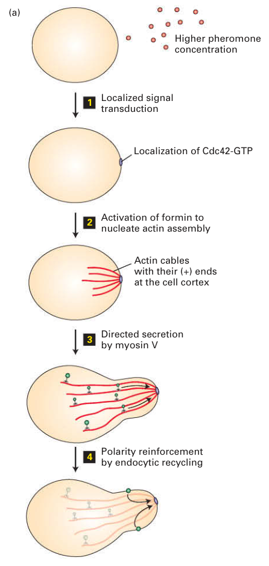
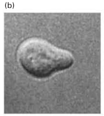
| Localized signal transduction | 局部信号转导 |
| Higher pheromone concentration | 更高的信息素浓度 |
| Localization of Cdc42-GTP | Cdc42-GTP的定位 |
| Activation of formin to nucleate actin assembly | 激活formin以成核组装肌动蛋白 |
| Actin cables with their (+) ends at the cell cortex | (+)端位于细胞皮层的肌动蛋白束 |
| Directed secretion by myosin V | 由肌球蛋白V进行的定向分泌 |
| Polarity reinforcement by endocytic recycling | 通过内吞回收强化极性 |
未受精卵是对称的，那么是什么打破了这种对称性、产生极化的合子呢？结果表明，受精后精子的位置决定了后端。在精子进入之前，整个卵皮层处于张力之下，这种张力由含有活性肌球蛋白II的肌动蛋白网提供。正如我们在第17章看到的，肌球蛋白II可以形成双极纤丝，牵拉肌动蛋白丝以产生张力，这在肌肉和收缩环中也可以看到。肌球蛋白II的活性由一条涉及小GTP酶Rho的信号转导途径调控（见图17-43）。在未受精卵中，Rho通过其激活因子的均匀分布而维持在活性的Rho⋅GTP状态，即鸟嘌呤核苷酸交换因子Rho-GEF。Rho⋅GTP激活Rho激酶，后者磷酸化肌球蛋白II的肌球蛋白轻链从而激活它（图21-27a）。受精后不久，一个来自精子中心体的未知信号导致维持活性Rho所必需的Rho-GEF发生局部耗竭。因此，精子中心体的不对称位置通过耗竭Rho-GEF来确定后端区域，从而降低肌球蛋白II的活性。随着收缩活性在局部降低，肌动蛋白-肌球蛋白网向前部收缩（图21-27b），在此过程中，它（以某种未知方式）把含有Par3、Par6和aPKC的前部复合物拖向那一端（图21-27c）。随着前部复合物被移走，Par2现在可以占据后部皮层，细胞不对称性由此建立。
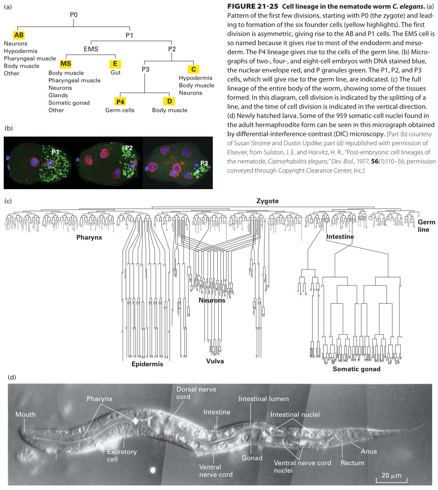
| Zygote | 合子 |
| Germ line | 生殖系 |
| Germ cells | 生殖细胞 |
| Body muscle | 体肌 |
| Pharyngeal muscle | 咽肌 |
| Neurons | 神经元 |
| Hypodermis | 皮下组织 |
| Intestine | 肠 |
| Intestinal lumen | 肠腔 |
| Pharynx | 咽 |
| Epidermis | 表皮 |
| Somatic gonad | 体细胞性腺 |
| Dorsal nerve cord | 背神经索 |
| Ventral nerve cord | 腹神经索 |
| Excretory cell | 排泄细胞 |
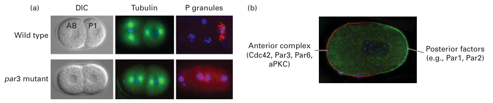
| Wild type | 野生型 |
| par3 mutant | par3突变体 |
| Tubulin | 微管蛋白 |
| P granules | P颗粒 |
| Anterior complex (Cdc42, Par3, Par6, aPKC) | 前部复合物（Cdc42、Par3、Par6、aPKC） |
| Posterior factors (e.g., Par1, Par2) | 后部因子（如Par1、Par2） |
| DIC | DIC（微分干涉相差） |
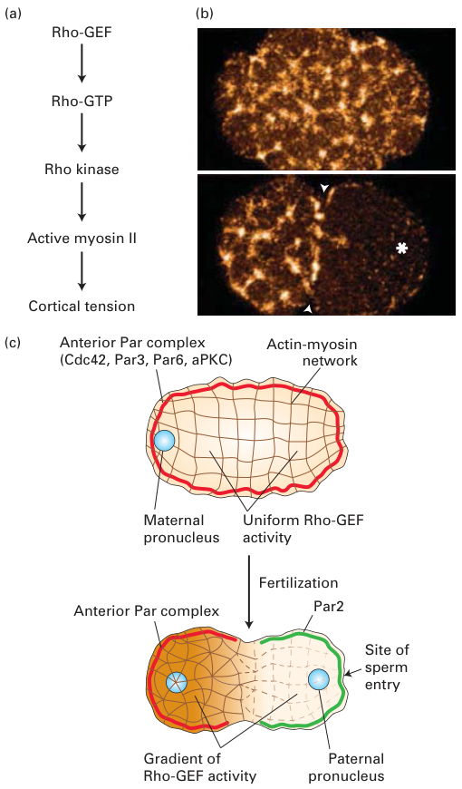
| Rho-GEF | Rho-GEF |
| Rho-GTP | Rho-GTP |
| Rho kinase | Rho激酶 |
| Active myosin II | 有活性的肌球蛋白II |
| Cortical tension | 皮层张力 |
| Fertilization | 受精 |
| Maternal pronucleus | 雌原核 |
| Paternal pronucleus | 雄原核 |
| Anterior Par complex (Cdc42, Par3, Par6, aPKC) | 前部Par复合物（Cdc42、Par3、Par6、aPKC） |
| Gradient of Rho-GEF activity | Rho-GEF活性的梯度 |
| Uniform Rho-GEF activity | 均匀的Rho-GEF活性 |
| Site of sperm entry | 精子进入位点 |
| Actin-myosin network | 肌动蛋白-肌球蛋白网 |
| Par2 | Par2 |
结果表明，肌动蛋白-肌球蛋白网收缩所诱导的初始不对称并不需要主调控因子Cdc42。然而，有活性的Cdc42⋅GTP结合Par6，并且对于把前部复合物维持在前端是必需的，尽管这一定位的机制尚不清楚。最近的工作还提示，存在一个内吞强化循环（正如我们讨论过的酵母shmoo形成那样）来维持极性。因此，响应空间线索、建立不对称性以及维持不对称性这几个步骤，是两个系统共有的保守特征。
Par蛋白和其他极性复合物参与上皮细胞极性
在脊椎动物中，极化的上皮细胞利用来自相邻细胞和细胞外基质的线索来定向其极化轴。脊椎动物上皮细胞的极化过程与黑腹果蝇（Drosophila melanogaster）中的过程非常相似。我们的知识大多来自果蝇系统，因为在那里突变体很容易被分离和分析。
在果蝇中进行的遗传筛选发现了多个产生上皮细胞极性所必需的基因。对这些基因所编码的蛋白质以及突变体表型的分析，鉴定出三大类蛋白：由Cdc42、Par3、Par6和aPKC组成的复合物（在该系统中称为顶端Par复合物，或简称为Par复合物）、Crumbs复合物和Scribble复合物。通过广泛分析当个别组分缺失时这些复合物彼此之间的影响，人们已经对它们在上皮细胞极化中的贡献有了一般的了解，尽管详细的分子层面认识仍在不断涌现（图21-28a）。
上皮细胞极化中已知的第一步是相邻细胞之间的相互作用；在脊椎动物细胞中，这种相互作用通过nectin（Ig超家族的一种细胞黏附分子）和一种称为JAM-A的连接蛋白发生。这些相互作用向细胞发出信号，使其招募Par复合物并组装黏着连接和紧密连接（见图20-1）。Crumbs复合物的招募位置比Par复合物更靠顶端，而Scribble复合物界定了基底外侧表面。在缺乏Par复合物时，细胞无法极化；正如在线虫胚胎中一样，Par复合物是细胞极性的主调控因子。在缺乏Scribble复合物时，顶端结构域大大扩展；而在缺乏Crumbs时，顶端结构域大大缩小。这些观察使人们认识到，这些复合物之间存在相互拮抗的关系，例如，顶端Par复合物的激酶aPKC通过磷酸化拮抗基底外侧的Scribble复合物（见图21-28a）。因此，正如在线虫胚胎中的情况一样，不对称性是由彼此拮抗的复合物介导的。
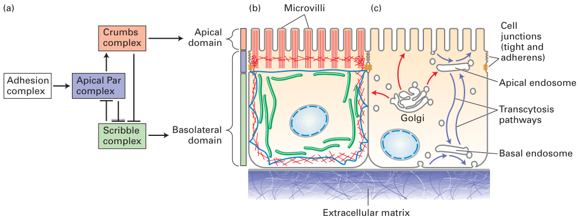
| Apical domain | 顶端结构域 |
| Basolateral domain | 基底外侧结构域 |
| Apical Par complex | 顶端Par复合物 |
| Crumbs complex | Crumbs复合物 |
| Scribble complex | Scribble复合物 |
| Adhesion complex | 黏附复合物 |
| Cell junctions (tight and adherens) | 细胞连接（紧密连接和黏着连接） |
| Extracellular matrix | 细胞外基质 |
| Microvilli | 微绒毛 |
| Golgi | 高尔基体 |
| Apical endosome | 顶端内体 |
| Basal endosome | 基底内体 |
| Transcytosis pathways | 转胞吞途径 |
人们对这种极性蛋白的排布方式只有部分了解，它重塑细胞骨架，使微丝形成不同的排布，与顶端膜和基底外侧膜相关联。上皮细胞中微管的分布颇为不寻常，因为它们并非都与中心体相连；相反，侧面微管把其(−)端朝向顶端结构域，而其他微管在微绒毛下方垂直于侧面微管走行，也沿着细胞的基底部走行（图21-28b）；这些排布是如何建立的尚不清楚。膜运输也是极化的（图21-28c）。新合成的、指定送往顶端膜和基底外侧膜的膜蛋白在反面高尔基体网络中被分选并包装进不同的运输小泡，然后被运送到适当的表面。此外，来自顶端表面和基底外侧表面的内吞途径调节膜蛋白的丰度，并利用一套复杂的分选内体在称为转胞吞作用的过程中运输错误分选的蛋白。
在果蝇中寻找更多对上皮细胞极性重要的组分的遗传筛选中，人们发现了内吞运输的组分。例如，一个这样的突变体影响顶端跨膜蛋白Crumbs的运输，因此当内吞作用受损时，表面的Crumbs水平升高，顶端结构域扩展。因此，上皮细胞极性涉及对空间线索的响应以及细胞骨架的重组，后者为分泌性和内吞性膜运输途径提供了框架，以建立并维持极化状态。
平面细胞极性途径使上皮内的细胞定向
到目前为止，我们只讨论了一个维度上的不对称，但在许多情况下，多细胞生物中的细胞至少在两个维度上极化——从上到下以及沿身体轴。只要看看我们周围动物的特征，比如鱼的鳞片、鸟的羽毛或你手臂上的毛发，就能清楚地看出，产生这些结构的细胞群不仅必须以从上到下（顶端/基底）的方式组织，还必须以从头到尾、即近端/远端的方式组织。这种类型的极性称为平面细胞极性（PCP）。来自果蝇的一个研究得很透彻的例子是翅膀每个细胞上向后指的单根毛发（图21-29a）。正如我们已经看到的，果蝇是一个特别适合遗传解剖的模型系统。遗传分析表明，每个翅膀细胞都会响应其邻居的平面方向，并且人们已经鉴定出特异影响PCP的组分（图21-29b）。上皮的整体平面极性可能由某种配体或机械张力在整个组织中的梯度决定。这一梯度以相同的方式使上皮中的所有细胞极化，导致Frizzled和Dishevelled基因编码的蛋白定位于每个细胞的一侧，而Strabismus基因编码的蛋白定位于另一侧（图21-29c）。PCP蛋白的这种不对称分布导致毛发以适当的取向生长。我们在Wnt途径的背景下已经遇到过Frizzled（一种跨膜受体）和Dishevelled（一种衔接蛋白）（见图16-30），它们在平面细胞极性中的作用可能涉及某种形式的Wnt以及另一些配体。当PCP途径的组分被破坏时——例如在Dishevelled突变体中——上皮完全完整，但毛发方向错乱（见图21-29b）。
PCP组分的互补排布意味着，一个细胞一侧的膜蛋白Strabismus将与相邻细胞上的Frizzled蛋白相邻；确实，这两种蛋白相互作用，而这种相互作用对于在整个上皮中协调PCP很重要。与线虫和果蝇中的极性复合物一样，这些蛋白表现出细胞内的相互拮抗（图21-29c）。因此，当一个细胞上的Frizzled与相邻细胞上的Strabismus结合时，那个相邻细胞将在其相反的一侧富集Frizzled，在那里它将与下一个细胞上的Strabismus结合，这一模式将在整个组织中重复。因此，细胞之间Frizzled与Strabismus的互补相互作用，以及细胞内它们的相互拮抗，把PCP传播到整个组织。
平面细胞极性的另一个清楚例子是内耳的毛感觉细胞，它们使脊椎动物能够感知声音。这些细胞中的每一个都有一列排列成V形图案的有序静纤毛，而且每个细胞的取向都与其邻居精确一致。在PCP基因Celsr1有缺陷的小鼠中，任一给定细胞内静纤毛的有序排列得以保留，但细胞彼此的相对取向被打乱（图21-29d）。这类缺陷可导致耳聋。
Par蛋白参与干细胞的不对称分裂
我们已经看到，干细胞常常产生一个子代干细胞和一个分化的子代细胞（见图21-11）。建立这些不对称细胞分裂的线索是什么？已发现两类机制（图21-30）。在一种机制中，细胞命运决定因子响应外部线索而在细胞分裂之前被分配到细胞的一端。这一机制涉及Par蛋白；正如我们已经看到的，Par蛋白在线虫胚胎的第一次不对称分裂以及在上皮细胞极性的建立中起着关键作用。在第二种机制中，干细胞以一个可重现的取向分裂，从而保持与干细胞龛的联系，而子代细胞则被移离龛，随后可以分化。这就是我们在果蝇卵巢中已经遇到的情形，其中帽细胞为生殖系干细胞形成龛（见图21-12）。
干细胞不对称分裂的一个理解得特别透彻的例子是果蝇中枢神经系统中神经元和胶质细胞的形成（图21-31）。在这个模型系统中，神经母细胞干细胞起源于神经性外胚层，后者是一层具有顶端面和基底面的典型上皮。神经母细胞增大（步骤1）并向基底方向移入胚胎内部，但仍与神经性外胚层上皮保持接触（步骤2）。随后它进行不对称分裂（步骤3），产生一个新的神经母细胞和一个神经节母细胞（GMC）（步骤4）。神经节母细胞只能分裂一次，产生两个细胞，即神经元或胶质细胞。神经母细胞通过与神经性外胚层龛保持联系而维持干细胞身份，它可以反复分裂，产生许多神经节母细胞，进而产生神经元和胶质细胞（步骤5），从而充实中枢神经系统。因此，关键事件是神经母细胞进行不对称分裂的能力（图21-31b）。这一过程同样涉及Par复合物——Par3-Par6-aPKC——的不对称积累，以及它定位在细胞最靠近上皮的顶端侧，并与Scribble形成拮抗关系（图21-31c）。其他决定极性的因子随后被定位在细胞的基底侧，有丝分裂纺锤体的组建方式使得细胞分裂时这些因子被分离。这些基底定位的决定因子之一称为Miranda，它是一种与调控增殖和分化的因子相结合的蛋白（见图21-31c）。因此，在不对称细胞分裂中，Miranda及其结合的因子被从神经母细胞分离出来，进入神经节母细胞。
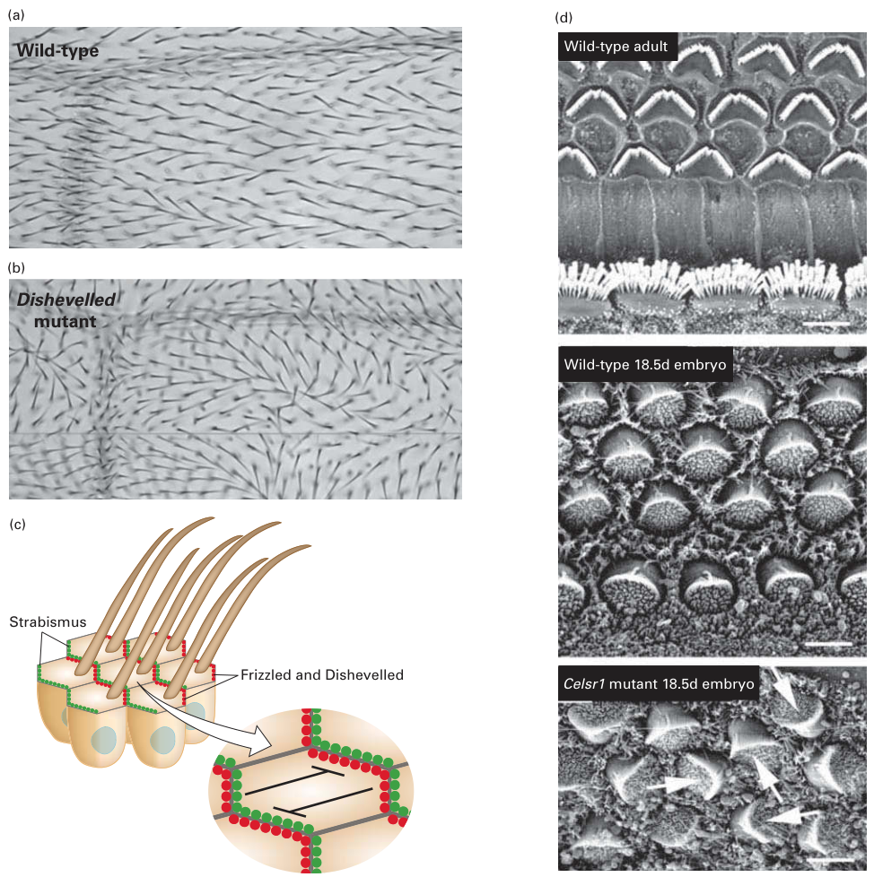
| Wild-type | 野生型 |
| Wild-type adult | 野生型成体 |
| Wild-type 18.5d embryo | 野生型18.5天胚胎 |
| Celsr1 mutant 18.5d embryo | Celsr1突变体18.5天胚胎 |
| Dishevelled mutant | Dishevelled突变体 |
| Frizzled and Dishevelled | Frizzled和Dishevelled |
| Strabismus | Strabismus |
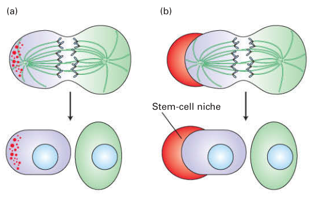
| Stem-cell niche | 干细胞龛 |
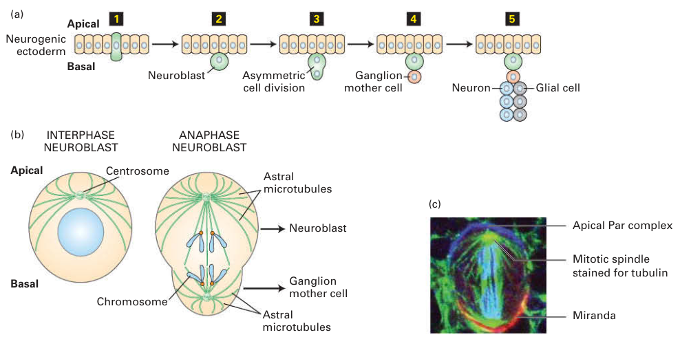
| Neurogenic ectoderm | 神经性外胚层 |
| Neuroblast | 神经母细胞 |
| Ganglion mother cell | 神经节母细胞 |
| Neuron | 神经元 |
| Glial cell | 胶质细胞 |
| Asymmetric cell division | 不对称细胞分裂 |
| Interphase | 分裂间期 |
| Anaphase | 分裂后期 |
| Chromosome | 染色体 |
| Centrosome | 中心体 |
| Astral microtubules | 星体微管 |
| Mitotic spindle | 有丝分裂纺锤体 |
| Apical Par complex | 顶端Par复合物 |
| Miranda | Miranda |
- 细胞极性涉及蛋白质、脂质和其他大分子在细胞中的不对称分布。
- 细胞具有一个利用反馈环产生极性的内在程序。
- 在许多系统中，极性程序的一个关键调节因子是小GTP结合蛋白Cdc42。
- 当酵母细胞出芽时，内在极性程序利用反馈环把Cdc42⋅GTP浓集在单个位点。
- 不对称性要求细胞感受线索，通过组装极化的细胞骨架来响应线索，然后利用这种极性把极性因子适当地分配。
- 单倍体酵母的交配涉及：把细胞骨架朝交配信息素浓度最高的方向极化以组装交配突起（shmoo），并把细胞组分的分泌靶向到那里以进行细胞扩增。
- 秀丽隐杆线虫（C. elegans）胚胎第一次分裂中的前/后不对称涉及：肌动蛋白-肌球蛋白网的不对称收缩，把前部Par3-Par6-aPKC复合物定位到前部皮层，随后使Par2等后部因子与后部皮层结合。前部和后部复合物的不对称由相互拮抗的途径维持。
- 顶端/基底上皮细胞极性也由顶端的Par3-Par6-aPKC复合物驱动，它与顶端Crumbs复合物和基底Scribble复合物以拮抗关系发挥作用。
- 平面细胞极性利用一组不同的拮抗关系来调控上皮片层中细胞的取向。
- 不对称细胞分裂要求细胞先极化，然后以不对称分离命运决定因子的方式分裂。
- 干细胞的不对称分裂常常涉及干细胞与龛的联系，在这种情况下，干细胞产生另一个干细胞和一个正在分化的细胞。
- 干细胞的不对称分裂还涉及Par复合物的不对称分布：分裂期间Par复合物保留在干细胞中，而命运决定因子则定位在远离Par复合物之处，最终进入正在分化的细胞。
21.5 细胞死亡及其调控
受调控的细胞死亡在后生动物中是一个反直觉但不可或缺的过程。在胚胎发生过程中，特定细胞的程序性死亡使鸡爪以及我们的手不至于长成蹼状（图21-32）；它还能阻止我们的胚胎尾持续存在，并防止我们的大脑被无用的神经连接填满。事实上，脑发育过程中产生的大多数细胞随后都会死亡。我们将在第23章看到，对正常机体蛋白发生反应或产生无功能抗体的免疫系统细胞是如何被选择性杀死的。许多种肌肉细胞、上皮细胞和白细胞不断损耗，需要被清除并替换。
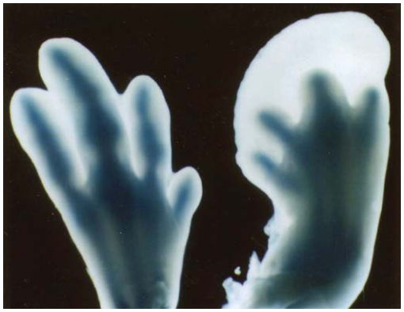
细胞间相互作用以两种根本不同的方式调控细胞死亡。第一，多细胞生物中大多数（即便不是全部）细胞都需要特定的蛋白激素信号才能存活。缺乏这类通常称为营养因子的存活信号时，细胞会启动一套"自杀"程序。第二，在某些发育情境中（包括免疫系统），另一些特定的激素信号会诱导一套杀死细胞的"谋杀"程序。无论细胞是因缺乏存活信号而自杀，还是被来自其他细胞的杀伤信号所谋杀，细胞死亡最常由一条共同的分子通路介导，这条通路称为细胞凋亡（apoptosis），它在无脊椎动物和脊椎动物中高度保守。细胞尸体被邻近细胞摄入，其内容物被分解成小分子，再被用于构建其他细胞。
另一种形式的细胞死亡——坏死，发生在细胞遭受损伤或过度应激（如高温、缺氧或病原体感染）时。坏死会在质膜上打出孔洞，导致胞内内容物渗漏。也许令人意外的是，坏死的一种形式——坏死性凋亡，常由细胞外激素触发，如肿瘤坏死因子α（TNFα；见图16-35）。这条细胞死亡通路的激活常常引起炎症，并促成许多人类疾病的发生，包括神经退行性变和动脉粥样硬化。
在本节中，我们首先区分程序性细胞死亡与坏死所致的死亡，然后描述秀丽隐杆线虫（C. elegans）的遗传学研究如何阐明了一条进化上保守的、导致细胞自杀的效应通路。随后我们转向脊椎动物：在那里，细胞死亡既受营养因子调控（例如它们在神经元发育的程序性细胞死亡中的重要性），也受DNA损伤等细胞应激的调控。我们还将说明线粒体在启动脊椎动物细胞死亡通路中的关键作用。最后，我们讨论坏死性凋亡，以及我们对这一过程的认识如何为治疗某些人类疾病铺平了道路。
大多数程序性细胞死亡通过凋亡发生
程序性细胞死亡导致的细胞消亡以一系列界限分明的形态学变化为标志，这些变化统称凋亡，这是一个希腊词，意为"掉落"或"落下"，就像树叶从树上落下。垂死的细胞皱缩、凝集，然后碎裂，释放出小的膜包被的凋亡小体，随后被其他细胞吞噬（图21-33）。在这些凋亡细胞内部，细胞核凝集，DNA被片段化。重要的是，胞内成分不会被释放到细胞外环境中（在那里它们可能对邻近细胞产生有害影响），而是被邻近细胞吞噬。凋亡过程中出现的这些刻板变化——例如细胞核凝集和被周围细胞吞噬——使早期科学家认为，这种细胞死亡受一套严格程序的调控。这套程序在胚胎期和成年期对于维持正常的细胞数量和组成都至关重要。
参与控制细胞死亡的基因编码具有三种不同功能的蛋白：
● "杀手"蛋白是细胞启动凋亡过程所必需的。
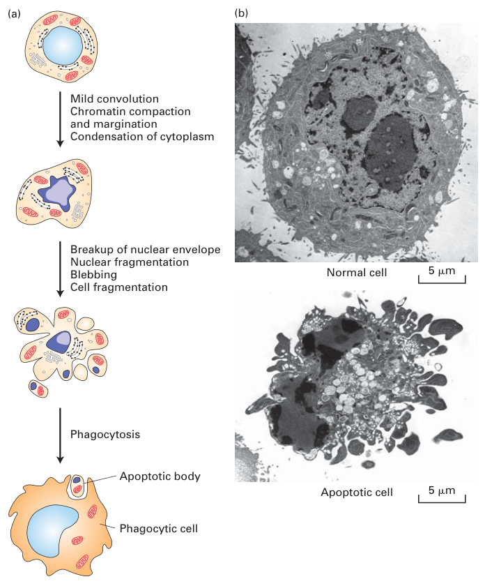
| mild convolution | 轻度卷曲 |
| chromatin compaction and margination | 染色质凝集与边缘化 |
| condensation of cytoplasm | 胞质浓缩 |
| breakup of nuclear envelope | 核被膜破裂 |
| nuclear fragmentation | 核碎裂 |
| blebbing | 膜泡化（blebbing） |
| cell fragmentation | 细胞碎裂 |
| phagocytosis | 吞噬作用 |
| apoptotic body | 凋亡小体 |
| phagocytic cell | 吞噬细胞 |
| normal cell | 正常细胞 |
| apoptotic cell | 凋亡细胞 |
● "破坏"蛋白执行诸如消化垂死细胞中蛋白质和DNA等功能。
● "吞噬"蛋白是另一个细胞吞噬垂死细胞所必需的。
乍看之下，吞噬似乎只是一个死后的清理过程，但有证据表明它属于死亡过程的最后一步。例如，杀手基因的突变总能阻止细胞启动凋亡，而阻断吞噬基因的突变有时会让细胞在死亡之前多存活一段时间。吞噬涉及吞噬细胞在垂死细胞周围组装一圈肌动蛋白晕，这由Rac的激活所触发；Rac是一种帮助调控肌动蛋白聚合的单体G蛋白（见图17-44）。
与凋亡相反，因坏死或坏死性凋亡而死亡的细胞表现出非常不同的形态学变化。通常，经历这一过程的细胞会肿胀并破裂，释放出胞内内容物，这些内容物可以损伤周围细胞并常常引起炎症。
进化上保守的蛋白参与凋亡通路
C. elegans的遗传学研究与人类癌细胞研究的交汇提示，存在一条进化上保守的通路介导凋亡。在C. elegans中，细胞谱系受严格的遗传控制，并且在该物种的所有个体中都完全相同。大约10轮或更少的细胞分裂就能形成成虫，成虫长约1 mm、直径约70 μm。成虫可以是雌雄同体（同时具有雄性和雌性器官的虫体），也可以是雄虫。雌雄同体形式有959个体细胞核，而雄虫有1031个（见图21-25d）。科学家利用DIC显微镜追踪活体虫的发育，已经追溯出C. elegans中每个体细胞从受精卵到成熟虫体的谱系（见图21-25c）。
在成虫雌雄同体发育过程中产生的947个非性腺细胞中，有131个发生程序性细胞死亡。特定的突变揭示了四个基因，其编码蛋白在控制C. elegans发育过程中的程序性细胞死亡方面发挥关键作用：ced-3、ced-4、ced-9和egl-1。例如在ced-3或ced-4突变体中，这131个"注定死亡"的细胞存活下来（图21-34）。这些突变体构成了凋亡受遗传程序控制的最早证据，并为Robert Horvitz赢得了诺贝尔奖。与线虫CED-3、CED-4、CED-9和EGL-1蛋白对应最密切的哺乳动物蛋白示于图21-35。在讨论线虫蛋白时，我们会不时在括号中给出哺乳动物中的名称，以便更清楚地理解它们之间的关系。
第一个被克隆的哺乳动物凋亡基因bcl-2，是从人滤泡性淋巴瘤——免疫系统中产生抗体的B细胞所生的肿瘤——中分离出来的。该基因的一种突变形式形成于一名患者的淋巴瘤细胞中；一次染色体重排把bcl-2基因的蛋白编码区与一个免疫球蛋白基因增强子连接在一起。这种组合导致Bcl-2蛋白过量产生，使这些癌细胞在本应程序性死亡时仍能存活。人Bcl-2蛋白与线虫CED-9蛋白同源；尽管这两种蛋白的序列只有23%相同，表达bcl-2转基因仍能阻断ced-9突变虫体中观察到的广泛细胞死亡。因此这两种蛋白都作为抑制凋亡通路的调控因子发挥作用（见图21-35）。此外，这两种蛋白都含有一个跨膜结构域，主要定位于线粒体外膜，在那里作为感受器，响应外部刺激来控制凋亡通路。正如我们接下来要讨论的，其他调控因子则促进凋亡。
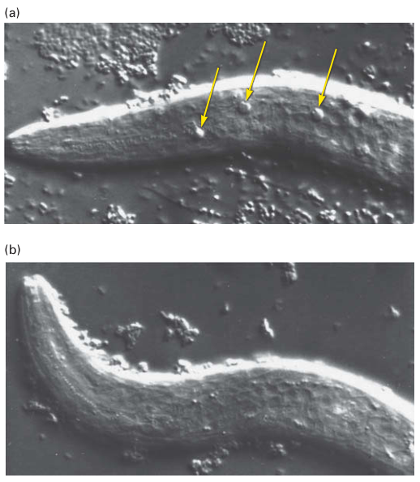
在线虫的凋亡通路中，CED-3（哺乳动物中为caspase-9）是一种蛋白酶，是凋亡过程中破坏细胞组分所必需的。CED-4（Apaf-1）是一种蛋白酶激活因子，它引起CED-3的无活性前体（一种酶原）发生自蛋白水解切割（并由其催化），产生有活性的CED-3蛋白酶，从而启动细胞死亡（见图21-35和图21-36）。在ced-3和ced-4单突变体以及ced-9/ced-3双突变体中不发生细胞死亡。相反，在ced-9突变体中，所有细胞在胚胎期都通过凋亡死亡，因此成虫形式永远无法发育。这些遗传学研究表明，CED-3和CED-4是细胞死亡所必需的杀手蛋白，而CED-9（Bcl-2）抑制凋亡。ced-9突变体中所有细胞都死亡这一观察结果表明，凋亡通路存在于所有体细胞中并且可以在其中被激活。此外，ced-9/ced-3双突变体中不发生细胞死亡，提示CED-9作用于CED-3的上游以抑制凋亡通路。
CED-9（Bcl-2）在线虫中控制CED-3（caspase-9）的机制已经清楚，它与后面将要讨论的（见下文图21-41）哺乳动物细胞中的机制有所不同。线虫CED-9蛋白与CED-4（Apaf-1）蛋白的二聚体形成复合物，从而阻止CED-4激活CED-3（图21-36）。结果，细胞得以存活。这一机制与遗传学结果相符：如果CED-3也缺失，CED-9的缺失就不产生任何影响（ced-3/ced-9双突变体没有细胞死亡）。三聚体CED-4/CED-9复合物的三维结构显示，两个CED-4分子各自与单个CED-9分子之间存在巨大的接触面；大的接触面使这种结合具有高度特异性，但其方式又使得复合物的解离可以被调控。
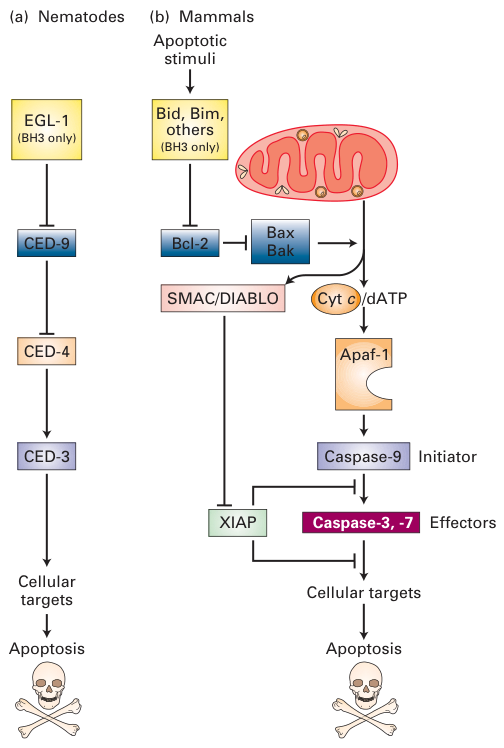
| EGL-1 | EGL-1 |
| CED-9 | CED-9 |
| CED-4 | CED-4 |
| CED-3 | CED-3 |
| Bcl-2 | Bcl-2 |
| Bax | Bax |
| Bak | Bak |
| Apaf-1 | Apaf-1 |
| caspase-9 | caspase-9 |
| caspase-3, -7 | caspase-3、caspase-7 |
| XIAP | XIAP |
| SMAC/DIABLO | SMAC/DIABLO |
| cytochrome c | 细胞色素c |
| BH3-only protein | BH3-only蛋白 |
| dATP | dATP |
第四个经遗传学确定的凋亡调控基因egl-1的转录，在程序化死亡的C. elegans细胞中被激活。新产生的EGL-1蛋白与CED-9结合，改变其构象，并催化CED-4从CED-9上释放（见图21-36）。EGL-1和CED-9都含有一个12个氨基酸的BH3结构域。由于EGL-1缺少CED-9的大多数其他结构域，它被称为BH3-only蛋白。序列和功能与EGL-1最接近的哺乳动物BH3-only蛋白是促凋亡蛋白Bid和Bim，将在后面讨论。
对EGL-1如何破坏CED-4/CED-9复合物的认识，来自EGL-1（哺乳动物Bid/Bim）与CED-9（Bcl-2）结合的分子结构。在该复合物中，BH3结构域构成两种蛋白之间接触面的关键部分。CED-9在被EGL-1结合时的构象与在被CED-4结合时不同。这一发现提示，EGL-1的结合使CED-9发生形变，从而使其与CED-4的相互作用变得不稳定。一旦EGL-1引起CED-4/CED-9复合物解离，释放出的CED-4二聚体就与另外三个CED-4二聚体结合形成八聚体，随后通过我们即将讨论的机制激活CED-3。细胞死亡随即发生（见图21-36）。
此处描述的步骤足以诱导凋亡的证据，来自用纯化蛋白在体外重建这些步骤的实验。CED-3、CED-4、缺少线粒体膜锚定区段的CED-9蛋白片段以及EGL-1都被纯化，同样被纯化的还有CED-4/CED-9复合物。纯化的CED-4（Apaf-1）能够加速纯化CED-3（caspase-9）的自蛋白水解切割和激活，但向反应混合物中加入CED-9（Bcl-2）则抑制这种自切割。当CED-4/CED-9复合物与CED-3混合时，不发生自切割；但向反应混合物中加入EGL-1可通过把CED-4从其与CED-9的复合物中释放出来而恢复CED-3的自切割。
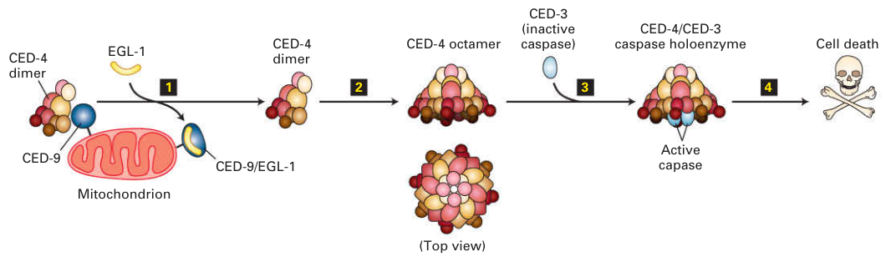
| EGL-1 | EGL-1 |
| CED-9 | CED-9 |
| CED-9/EGL-1 | CED-9/EGL-1 |
| CED-4 dimer | CED-4二聚体 |
| CED-4 octamer | CED-4八聚体 |
| CED-4/CED-3 caspase holoenzyme | CED-4/CED-3胱天蛋白酶全酶 |
| CED-3 | CED-3 |
| CED-3 zymogen | CED-3酶原 |
| active caspase | 有活性的胱天蛋白酶 |
| mitochondrion | 线粒体 |
| cell death | 细胞死亡 |
| top view | 俯视图 |
要看EGL-1表达受调控在凋亡中的重要性，可以考察C. elegans中一类只见于雌雄同体而不见于雄虫的神经元。这些雌雄同体特异性神经元在雌雄同体和雄虫中都于胚胎期产生，但在雄虫中发生程序性细胞死亡。在雌雄同体中，这些神经元内egl-1基因的表达被转录因子TRA-1A所抑制，而雌雄同体中TRA-1A的缺失会使这些神经元发生凋亡。这一发现强化了前面提出的一个观点：所有后生动物细胞都有可能发生凋亡，因此这一过程必须受到精细调控！
胱天蛋白酶放大最初的凋亡信号并破坏关键细胞蛋白
凋亡通路中的效应蛋白酶——胱天蛋白酶（caspase）——之所以如此命名，是因为它们在催化位点含有一个关键的半胱氨酸残基，并选择性地在紧靠天冬氨酸残基C端一侧的位点切割蛋白质。胱天蛋白酶以同源二聚体形式工作，每个单体的一个结构域稳定另一单体的活性位点。C. elegans中的主要胱天蛋白酶是CED-3，而人类有14种不同的胱天蛋白酶。所有胱天蛋白酶最初都以酶原（procaspase）形式产生；大多数需要经蛋白水解切割才能变为有活性形式。在脊椎动物中，起始胱天蛋白酶（如caspase-9）通过与另一类蛋白（如Apaf-1）结合所诱导的二聚化而被激活，这类蛋白有助于起始胱天蛋白酶聚集。被激活的起始胱天蛋白酶切割效应胱天蛋白酶（如caspase-3）使其激活；这样，少数被激活的起始胱天蛋白酶的蛋白水解活性，就通过效应胱天蛋白酶的激活而迅速且极大地增强，导致细胞内总胱天蛋白酶活性水平大幅升高（见图21-35）并引起细胞死亡。酶原预先以足够多的数量存在，当被构成起始信号的少量分子激活时，就足以消化细胞中的大部分蛋白质。各种效应胱天蛋白酶识别并切割许多不同靶蛋白中的短氨基酸序列。它们偏好的靶序列各不相同。它们在细胞内的特异靶标包括核纤层蛋白和细胞骨架蛋白，切割这些蛋白会导致细胞死亡。
正如我们在第7章所学的（见第282页），磷脂酰丝氨酸这种磷脂正常情况下存在于质膜朝向胞质的内层。在凋亡过程中，越来越多的磷脂酰丝氨酸出现在外层，在那里充当"吃我"信号：它与邻近细胞表面的一种受体样蛋白结合，从而启动吞噬。C. elegans中普遍表达的多重跨膜质膜蛋白CED-8及其哺乳动物同源物Xkr-8，是把磷脂酰丝氨酸暴露到细胞表面所必需的。这些磷脂翻转酶（见图11-16）通常无活性，但在凋亡过程中可被caspase-3或caspase-7催化的特异性切割所激活（见图21-35）。
神经营养因子促进神经元的存活
在哺乳动物（而非线虫）中，凋亡受来自许多分泌性蛋白激素和细胞表面蛋白激素的胞内信号调控，也受许多环境应激（如紫外线照射和DNA损伤）的调控。C. elegans的"核心"凋亡机器在哺乳动物中是保守的，但许多其他胞内蛋白也调控凋亡（见图21-35右）。
但在深入这些分子细节之前，我们先通过对发育中神经系统的简要分析，来说明营养因子在凋亡中的重要性。
当神经元生长以与其他神经元或肌肉建立连接时（有时要跨越相当长的距离），长出的神经元数量多于最终存活的神经元数量。许多感觉神经元和运动神经元的胞体位于脊髓及其邻近的神经节中，而它们的长轴突则延伸到这些区域之外的远处。那些与预定靶细胞形成称为突触的信号连接的神经元（见图22-3）胜出并存活；未能建立连接的神经元则会死亡。
20世纪初人们证明，支配外周细胞的神经元数量取决于它们所连接组织的体积，即所谓的靶场。例如，从发育中的鸡胚上切除肢芽，会导致支配该芽内肌肉的感觉神经元和运动神经元数量都减少（图21-37）。反之，向肢芽移植额外的肢体组织，会使脊髓和感觉神经节相应区域中的神经元数量增加。事实上，靶场体积的逐步增大伴随着支配该靶场的神经元数量成比例地逐步增加。人们发现这种关系源于神经元的选择性存活，而不是其分化或增殖的改变。许多感觉神经元和运动神经元在到达其外周靶场后死亡，这一观察提示这些神经元竞争由靶组织产生的存活因子。
在这些早期观察之后，科学家发现把小鼠肉瘤（一种肌肉肿瘤）移植到鸡体内，会使局部某些类型神经元的数量显著增加。这一发现提示该肿瘤是某种推定的营养因子的丰富来源。为了分离和纯化这种简称为神经生长因子（NGF）的因子，科学家使用了测量感觉神经节神经突向外生长的细胞培养实验。神经突是神经元胞质的延伸物，可以生长成为神经系统的长突起，即轴突和树突（见图22-1）。后来发现小鼠的下颌下腺也能大量产生NGF，这使Rita Levi-Montalcini得以将其纯化并测序；她因此获得了诺贝尔奖。NGF是由两条118个残基的多肽组成的同源二聚体，属于一个在结构和功能上相关的营养因子家族，统称为神经营养因子。脑源性神经营养因子（BDNF）和神经营养因子-3（NT-3）也是该蛋白家族的成员。
神经营养因子结合并激活一个称为Trk（读作"tracks"）的受体酪氨酸激酶家族。（受体酪氨酸激酶的一般结构及其激活的胞内信号通路见第16章。）每种神经营养因子都以高亲和力结合一种Trk受体：NGF结合TrkA；BDNF结合TrkB；NT-3结合TrkC。NT-3还能以较低亲和力结合TrkA和TrkB。所有神经营养因子也都以较低亲和力结合一种称为p75NTR（又称NTR，神经营养因子受体）的不同类型受体；p75NTR与不同的Trk受体形成异聚复合物。营养因子与其受体之间的这些结合关系为不同类别的神经元提供存活信号。当神经轴突从脊髓向外延伸到外周时，靶组织产生的神经营养因子与延伸中轴突末端生长锥（见图18-54）上的Trk受体结合，促进那些成功到达靶标的神经元的存活。
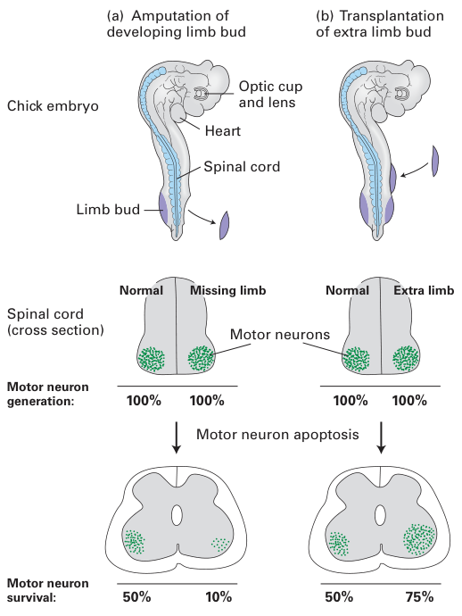
| amputation of developing limb bud | 切除发育中的肢芽 |
| transplantation of extra limb bud | 移植额外的肢芽 |
| motor neuron | 运动神经元 |
| motor neuron apoptosis | 运动神经元凋亡 |
| motor neuron survival | 运动神经元存活 |
| motor neuron generation | 运动神经元发生 |
| missing limb | 缺失的肢体 |
| extra limb | 额外的肢体 |
| chick embryo | 鸡胚 |
| spinal cord | 脊髓 |
| limb bud | 肢芽 |
| optic cup and lens | 视杯和晶状体 |
| heart | 心脏 |
| normal | 正常 |
为研究神经营养因子在发育中的作用，科学家制备了在每一种神经营养因子或其受体上带有敲除突变的小鼠。这些研究揭示，不同的神经营养因子及其相应的受体是不同类别感觉神经元存活所必需的（图21-38）。例如，表达TrkA的痛觉敏感（伤害感受性）神经元在缺乏NGF或TrkA的敲除小鼠背根神经节中选择性丢失，而表达TrkB和TrkC的神经元在这类敲除小鼠中不受影响。相反，表达TrkC、能检测肢体位置的本体感受神经元在TrkC和NT-3突变体的背根神经节中缺失。
线粒体在脊椎动物细胞凋亡调控中发挥核心作用
如前所述，C. elegans的CED-9及其哺乳动物同源物Bcl-2在抑制凋亡中发挥核心作用。在线虫中，CED-9通过与CED-4结合并阻断其激活来实现这一点。在脊椎动物中，Bcl-2位于线粒体外膜，其主要功能是维持该膜的低通透性，防止细胞色素c以及定位于膜间隙的其他蛋白（见图12-22）扩散进入胞质并激活凋亡胱天蛋白酶。
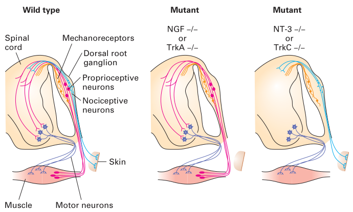
| mechanoreceptor | 机械感受器 |
| proprioceptive neuron | 本体感受神经元 |
| nociceptive neuron | 伤害感受性神经元 |
| motor neuron | 运动神经元 |
| dorsal root ganglion | 背根神经节 |
| spinal cord | 脊髓 |
| skin | 皮肤 |
| muscle | 肌肉 |
| wild type | 野生型 |
| mutant | 突变体 |
为了解释Bcl-2如何执行这一功能，以及Bcl-2的活性如何受营养因子和许多环境刺激的调控，我们需要介绍Bcl-2蛋白家族的另外几个重要成员。Bcl-2家族的所有成员在至多四个特征性区域上具有高度同源性，这些区域称为Bcl-2同源结构域（BH1–4；图21-39）。这些蛋白各自具有抗凋亡或促凋亡的功能。该家族的所有成员都参与寡聚化相互作用；许多成员的C端带有疏水序列，可以将蛋白锚定在线粒体外膜上。
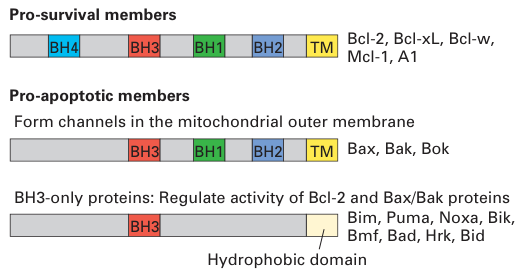
| Bcl-2 | Bcl-2 |
| Bcl-xL | Bcl-xL |
| Bcl-w | Bcl-w |
| Mcl-1 | Mcl-1 |
| A1 | A1 |
| BH3-only protein | BH3-only蛋白 |
| Bax | Bax |
| Bak | Bak |
| Bim | Bim |
| Puma | Puma |
| Noxa | Noxa |
| Bad | Bad |
| Bid | Bid |
| TM domain | 跨膜（TM）结构域 |
| pro-apoptotic member | 促凋亡成员 |
| pro-survival member | 促存活成员 |
促凋亡蛋白Bax和Bak在线粒体外膜上形成孔和洞
在脊椎动物细胞中，线粒体损伤和凋亡的诱导需要Bax或Bak。这两种相似的促凋亡蛋白含有BH1–4结构域中的三个（见图21-39），其三维结构与该家族抗凋亡成员的结构非常相似。作为这些蛋白促进凋亡作用的证据，大多数同时缺少Bax和Bak的小鼠在子宫内死亡，而存活下来的小鼠表现出显著的发育缺陷，包括趾间蹼持续存在以及中枢神经系统和造血系统中多余细胞的积聚。从这些小鼠中分离的细胞对几乎所有的凋亡刺激都具有抗性。反之，在培养细胞中过量产生Bax会诱导凋亡性死亡。
Bak存在于线粒体外膜中，通常与Bcl-2或相关蛋白Bcl-xL紧密结合（图21-40）。当Bak从Bcl-2上释放出来时——无论是由于自身过量存在、被某些BH3-only蛋白与Bcl-2的结合所取代，还是由于直接与其他BH3-only蛋白结合——它就会形成寡聚体，在线粒体外膜上产生孔。Bax主要位于胞质中，只有一小部分附着在线粒体上；后面将讨论的某些促凋亡蛋白的结合会使Bax像Bak一样寡聚化并插入线粒体外膜，形成孔。
回忆第12章的内容：线粒体不断进行融合和分裂（后者指两个子代线粒体彼此分开）。Bak和Bax在寡聚化后都会在线粒体分裂位点积聚，使外膜在这些位点形成洞。线粒体外膜上的孔和洞都允许线粒体蛋白（如细胞色素c）释放到胞质中，而在正常健康细胞中，这些蛋白定位于膜间隙。
如图21-35所示，释放出的细胞色素c激活caspase-9——部分是通过结合并激活Apaf-1，部分则是通过迄今未知的机制。作为该调控通路的证据，在培养细胞中过量产生Bcl-2会阻断细胞色素c的释放并阻断凋亡；反之，过量产生Bax会促进细胞色素c释放到胞质并促进凋亡。此外，将细胞色素c直接注射到细胞胞质中会诱导凋亡。
细胞色素c和SMAC/DIABLO蛋白从线粒体释放导致凋亡体形成和胱天蛋白酶激活
胞质中的细胞色素c激活凋亡的主要方式是结合Apaf-1，即CED-4的哺乳动物同源物（见图21-35右）。在没有细胞色素c时，单体Apaf-1与dATP结合。结合细胞色素c后，Apaf-1将其结合的dATP切割为dADP和Pi，并发生剧烈的组装，形成一个盘状七聚体，即一个被称为凋亡体的1.4-MDa的死亡之轮（图21-41）。凋亡体充当起始胱天蛋白酶caspase-9的激活机器，后者在无活性状态下是单体。起始胱天蛋白酶必须对激活信号敏感，但又不应以不可逆的方式被激活，因为意外激活会导致不良的滚雪球效应和快速细胞死亡。值得注意的是，caspase-9不需要经切割就能被激活，而是在与凋亡体结合后通过二聚化被激活。随后caspase-9切割多个效应胱天蛋白酶分子，如caspase-3（见图21-35和图21-40），导致它们被激活，继而破坏细胞蛋白并引起细胞死亡。相应线虫CED-4凋亡体的三维结构（图21-41c）显示，两个CED-3酶原如何在漏斗形八聚体内部彼此相邻地结合；随后这些分子通过二聚化和蛋白水解转换互相激活。CED-4凋亡体的结构也为相应哺乳动物凋亡体迄今未知的三维结构提供了一个模型（图21-41b右）。
在哺乳动物和果蝇中（而非线虫中），凋亡受其他若干蛋白的调控（见图21-35右）。XIAP是凋亡抑制蛋白（IAP）家族的一个成员，它提供了另一种制约起始胱天蛋白酶和效应胱天蛋白酶的方式。XIAP有三个N端BIR结构域；其中称为BIR2的结构域结合并抑制两种效应胱天蛋白酶caspase-3和caspase-7，而BIR3结合并抑制起始胱天蛋白酶caspase-9。（IAP家族的其他成员抑制由TNFα诱导的凋亡；见下文图21-42。）然而，当细胞需要发生凋亡时，IAP对胱天蛋白酶的抑制就造成了问题。线粒体再次登场，因为它们是一个称为SMAC/DIABLO的蛋白家族的来源，这些蛋白能抑制IAP。Bax或Bak寡聚体的组装（见图21-40）导致SMAC/DIABLO以及细胞色素c从线粒体释放。随后SMAC/DIABLO在胞质中与XIAP结合，从而阻断XIAP与胱天蛋白酶的结合。通过解除XIAP介导的抑制，SMAC/DIABLO促进胱天蛋白酶活性和细胞死亡。
营养因子诱导促凋亡BH3-only蛋白Bad失活
我们前面看到，NGF等神经营养因子保护神经元免于细胞死亡；这一效应是通过使一种称为Bad的促凋亡BH3-only蛋白失活来介导的。在缺乏营养因子时，Bad不被磷酸化，并在线粒体外膜与Bcl-2或密切相关的抗凋亡蛋白Bcl-xL结合（见图21-40）。这种结合抑制了Bcl-2和Bcl-xL结合Bax和Bak的能力，从而使Bak和Bax能够寡聚化并在线粒体外膜上形成孔和洞。
包括NGF在内的若干营养因子诱导PI-3激酶信号通路，导致蛋白激酶B的激活（见图16-29）。被激活的蛋白激酶B使Bad磷酸化；磷酸化的Bad不能与Bcl-2或Bcl-xL结合，而是以与磷酸丝氨酸结合蛋白14-3-3形成复合物的形式存在于胞质中（见图16-24）。作为该通路的证据，一种组成型活化的蛋白激酶B可以拯救培养的缺乏神经营养因子的神经元，否则这些神经元会发生凋亡并死亡。这些发现支持图21-40所描绘的营养因子存活作用机制。在其他细胞类型中，不同的营养因子可能通过对细胞死亡机器的其他组分进行翻译后修饰来促进细胞存活。
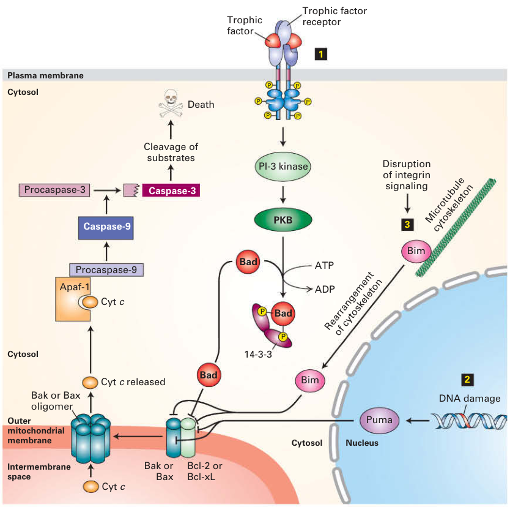
| outer mitochondrial membrane | 线粒体外膜 |
| intermembrane space | 膜间隙 |
| microtubule cytoskeleton | 微管细胞骨架 |
| Apaf-1 | Apaf-1 |
| caspase-9 | caspase-9 |
| caspase-3 | caspase-3 |
| procaspase-9 | procaspase-9 |
| Bad | Bad |
| Bim | Bim |
| Puma | Puma |
| PKB | PKB |
| PI-3 kinase | PI-3激酶 |
| trophic factor | 营养因子 |
| Bcl-2 or Bcl-xL | Bcl-2或Bcl-xL |
| Bak or Bax oligomer | Bak或Bax寡聚体 |
脊椎动物凋亡受环境应激激活的BH3-only促凋亡蛋白调控
线虫只含一种BH3-only蛋白EGL-1，而哺乳动物至少表达八种，包括Bad，并且具有细胞类型和应激特异性。这些蛋白的促凋亡活性受到多种转录和转录后机制的严密调控。两种BH3-only蛋白Puma和Noxa（见图21-40）由p53蛋白在转录水平诱导（见图19-29）。这种相互作用是检查点通路的一部分，未修复的DNA损伤可通过该通路诱导凋亡；因此，许多癌症中可见的p53缺失使细胞能够带着严重的DNA损伤存活（见图24-27）。另一种BH3-only蛋白Bim通常通过与动力蛋白轻链结合而被微管细胞骨架隔离（见图18-24）。细胞与其基质脱离会破坏整联蛋白信号、重排细胞骨架，并导致Bim释放。Puma和Bim都能直接结合Bak和Bax以及Bcl-2，使Bak和Bax从Bcl-2上释放出来并允许在线粒体外膜上形成孔和洞（见图21-40）。因此，哺乳动物细胞的凋亡受Bcl-2和Bcl-xL等抗凋亡蛋白与多种促凋亡BH3-only蛋白之间活性的精细平衡所调控。
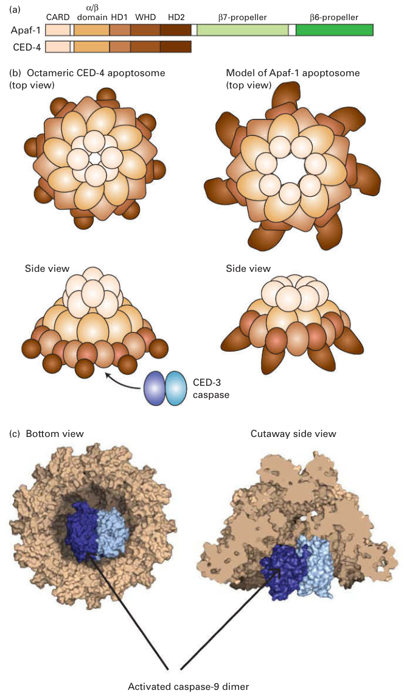
| CED-4 apoptosome | CED-4凋亡体 |
| Apaf-1 apoptosome | Apaf-1凋亡体 |
| CED-3 caspase | CED-3胱天蛋白酶 |
| activated caspase-9 dimer | 活化的caspase-9二聚体 |
| CARD domain | CARD结构域 |
| HD1/HD2 domain | HD1/HD2结构域 |
| WHD domain | WHD结构域 |
| β-propeller domain | β-螺旋桨结构域 |
| α/β domain | α/β结构域 |
| CED-4 | CED-4 |
| CED-3 | CED-3 |
| Apaf-1 | Apaf-1 |
| top view | 俯视图 |
| side view | 侧视图 |
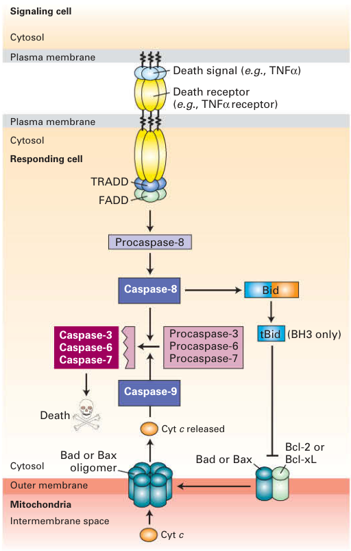
| FADD | FADD |
| TRADD | TRADD |
| death receptor | 死亡受体 |
| Bid | Bid |
| tBid | tBid |
| BH3-only protein | BH3-only蛋白 |
| caspase-8 | caspase-8 |
| procaspase-8 | procaspase-8 |
| caspase-3 | caspase-3 |
| caspase-6 | caspase-6 |
| caspase-7 | caspase-7 |
| caspase-9 | caspase-9 |
| cytochrome c | 细胞色素c |
| Bcl-2 or Bcl-xL | Bcl-2或Bcl-xL |
| signaling cell | 信号细胞 |
两种细胞谋杀由肿瘤坏死因子、Fas配体和相关死亡信号触发
尽管在缺乏存活因子时细胞死亡可以作为默认结局出现，凋亡也可以被正向作用的死亡信号所刺激。例如，由巨噬细胞释放的肿瘤坏死因子α（TNFα）触发了某些慢性炎症性疾病中所见的细胞死亡和组织破坏（见第23章）。另一个重要的死亡诱导信号是Fas配体，它是由活化的自然杀伤细胞和细胞毒性T淋巴细胞产生的一种细胞表面蛋白。该信号可以触发病毒感染细胞、某些肿瘤细胞以及外来移植细胞的死亡。根据细胞类型的不同，死亡可以通过凋亡或坏死性凋亡发生。
图21-42所示的TNFα和Fas配体（又称CD95配体）都是存在于一个细胞表面的三聚体蛋白，它们与相邻细胞上的"死亡受体"结合。这些死亡受体具有一个跨膜结构域，当三聚体配体的结合使三个受体分子彼此靠近时，它们就被激活。被激活的三聚体死亡受体复合物随后结合胞质蛋白Fas相关死亡结构域蛋白（FADD）和TNF受体相关死亡结构域蛋白（TRADD），形成一个还含有其他信号蛋白的大型寡聚复合物。（某些死亡受体（如TNFα的受体）诱导凋亡需要TRADD，而另一些则不需要。）随后FADD作为接头蛋白招募并激活起始胱天蛋白酶caspase-8。与另一种起始胱天蛋白酶caspase-9一样，caspase-8也是在两个分子与招募到活性死亡受体三聚体上的FADD蛋白结合后通过二聚化被激活。一旦被激活，caspase-8就激活若干效应胱天蛋白酶，放大级联随即开始。
caspase-8还切割BH3-only蛋白BH3相互作用结构域死亡激动剂（Bid）。由此产生的tBid片段随后与线粒体外膜上的Bcl-2结合，导致Bak/Bax孔和洞的形成、细胞色素c释放到胞质中，以及内源性凋亡通路的激活（见图21-40）。
为了检验Fas配体的死亡受体诱导细胞死亡的能力，研究人员将细胞与针对该受体的抗体共同孵育。结果发现，这些能结合并交联其同源受体的抗体可以刺激细胞死亡，表明通过寡聚化激活该受体就足以触发凋亡。
令许多研究人员意外的是，在缺乏起始胱天蛋白酶caspase-8的细胞中，加入TNFα触发的是坏死性凋亡而不是凋亡。该通路由同一个蛋白复合物启动——TNFα、TNFα受体以及TRADD——如图21-42所示，但不涉及FADD或caspase-8。该通路涉及若干信号转导蛋白；其中一个必需的蛋白是激酶RIP1（Requiescat in pace 1）。被激活后，RIP1使第二个激酶RIP3磷酸化，RIP3再使另一个称为MLKL的必需蛋白磷酸化。磷酸化使MLKL形成寡聚体，插入质膜并形成一个孔，允许Ca2+进入。Ca2+的内流使细胞及其细胞器肿胀并破裂，将其内容物释放到细胞外空间。其中一些释放出来的胞内蛋白会触发免疫系统细胞的激活，并引起组织炎症和损伤。坏死性凋亡引起的炎症被认为参与了若干人类疾病，包括神经退行性变和进行性动脉粥样硬化病变。正如我们在第16章所讨论的，TNFα的蛋白抑制剂是许多炎症性疾病最广泛使用的治疗药物之一；抑制RIP1激酶则是治疗以坏死和炎症为特征的人类疾病的另一条有前景的途径。
但这样一条有害的信号通路当初为什么会进化出来呢？一种流行的理论基于以下发现：若干病毒和其他病原体编码能使caspase-8失活的蛋白，从而阻止被感染细胞发生凋亡性死亡——否则这种死亡会阻止病毒复制并防止感染扩散到邻近细胞。坏死性凋亡只在缺乏caspase-8时发生，它提供了一条替代的细胞死亡通路，同样能阻止病原体扩散，但代价是宿主机体的炎症。
回忆一下，TNFα激活多条信号转导通路：一条导致转录因子NF-κB的激活（见图16-35），第二条导致凋亡（见图21-42），第三条导致坏死性凋亡。要理解这些通路各自的调控及其相互作用，还需要做大量工作，因为这种激素与许多炎症性疾病有关。
- 所有细胞都需要营养因子才能存活。缺乏这些因子时，细胞会自杀。
- C. elegans的遗传学研究确定了一条进化上保守的凋亡通路，它有三个主要组分：膜结合调控蛋白、胞质调控蛋白和凋亡蛋白酶（在脊椎动物中称为胱天蛋白酶）（见图21-35）。
- 一旦被激活，称为胱天蛋白酶的凋亡蛋白酶就切割特定的胞内底物，导致细胞死亡。其他结合调控蛋白和胱天蛋白酶的蛋白（如CED-4、Apaf-1）是胱天蛋白酶激活所必需的（见图21-35、图21-36和图21-41）。
- 发育过程中运动神经元和感觉神经元的存活由靶组织释放的神经营养因子介导，这些因子与神经元生长锥上的Trk受体酪氨酸激酶结合（见图21-38），并通过PI-3激酶通路激活抗凋亡反应（见图21-40）。
- Bcl-2家族既包含促凋亡蛋白也包含抗凋亡蛋白；其中大多数是跨膜蛋白，并参与蛋白-蛋白相互作用。
- 在哺乳动物中，凋亡可由Bax或Bak蛋白在线粒体外膜上的寡聚化所触发，导致细胞色素c和SMAC/DIABLO蛋白外流进入胞质；这些蛋白随后促进胱天蛋白酶激活和细胞死亡。
- Bcl-2蛋白能够制约Bax和Bak的寡聚化，从而抑制细胞死亡。
- 促凋亡BH3-only蛋白（如Puma、Bad）被环境应激激活，并刺激Bax和Bak寡聚化，使细胞色素c得以逃逸到胞质中、与Apaf-1结合，从而激活胱天蛋白酶。
- 促凋亡蛋白与抗凋亡蛋白之间的直接相互作用在缺乏营养因子时导致细胞死亡。细胞外营养因子的结合可以触发这些相互作用的变化，从而带来细胞存活（见图21-40）。
- 细胞外死亡信号（如肿瘤坏死因子和Fas配体）与其受体结合，使一种相关蛋白（FADD）寡聚化，进而触发胱天蛋白酶级联，导致细胞被凋亡谋杀。
- 在缺乏caspase-8时，肿瘤坏死因子诱导坏死性凋亡。由此释放到周围环境中的胞内蛋白可以引起炎症和组织损伤。
访问LaunchPad可获取学习工具并进一步了解本章内容：展望未来，以及包括视频、动画和测验在内的附加学习工具。
关键术语
复习题
- 1.定义干细胞的两个性质是什么？请区分全能性干细胞、多能性干细胞和祖细胞（前体细胞）。
- 2.干细胞在植物中位于何处？在成年动物中又位于何处？干细胞这一概念在动物与植物系统中有什么差异？
- 3.多利羊于1997年通过一种称为体细胞核移植（或称核移植克隆）的技术被克隆出来。研究人员把一只成年乳腺细胞的细胞核移入一个已去除细胞核的卵中。该卵在培养中分裂数次后，胚胎被移植到一只代孕母羊体内，后者产下了多利。多利在2003年死亡，此前它曾交配并自己产下可存活的后代。多利的诞生告诉我们，来自完全分化的成年细胞的核物质具有怎样的潜能？多利的诞生是否也告诉我们完整、完全分化的成年细胞具有什么潜能？
- 4.判断下列结构中所含的是全能性、多能性还是多潜能性细胞：（a）内细胞团，（b）桑椹胚，（c）八细胞胚胎，（d）滋养外胚层。
- 5.判断正误：已分化的体细胞具有被重编程而成为其他类型细胞的能力。请举出本章讨论的一条证据来支持你的判断。
- 6.请解释肠道干细胞最初是如何被鉴定的，以及随后如何在实验上被证明是多潜能干细胞。
- 7.请解释造血干细胞如何在实验上被证明既具有多潜能性，又能够自我更新。
- 8.秀丽隐杆线虫（C. elegans）已被证明是研究细胞诞生、细胞不对称性和细胞死亡的宝贵模式生物。该线虫的哪些特性使它如此适合这些研究？为什么来自C. elegans实验的大量信息对研究哺乳动物发育的研究者有用？
- 9.不对称细胞分裂常常依赖细胞骨架成分来产生或维持细胞内因子的不对称分布。在酿酒酵母（S. cerevisiae）中，哪种因子被肌球蛋白马达定位到芽体？在果蝇神经母细胞中，哪些因子被微管定位到顶端？
- 10.请讨论par基因在C. elegans胚胎中产生前/后极性方面的作用。
- 11.对敲除小鼠脑发育的研究如何支持"凋亡是神经元细胞中的默认途径"这一论断？
- 12.请比较并对照凋亡与坏死这两种细胞死亡方式。
- 13.请指出控制细胞死亡的三类主要蛋白质，并列出它们各自的功能。
- 14.基于你对细胞死亡过程的理解，预测下列情况对细胞发生凋亡能力的影响：（a）有功能的CED-9、无功能的CED-3；（b）有活性的Bax和细胞色素c、无功能的caspase-9；（c）无活性的PI-3激酶、有活性的Bad。
- 15.肿瘤坏死因子（TNF）和Fas配体与细胞表面受体结合以触发细胞死亡。尽管死亡信号是在细胞外产生的，我们为什么认为这些分子诱导的死亡是凋亡而不是坏死？
- 16.预测下列突变对细胞发生凋亡能力的影响：（a）Bad发生突变，使其不能被蛋白激酶B（PKB）磷酸化；（b）Bcl-2过表达；（c）Bax发生突变，使其不能形成同二聚体。癌细胞的一个常见特征是凋亡通路功能丧失。你认为上述哪些突变可能出现在某些癌细胞中？
- 17.凋亡抑制蛋白（IAP）如何与胱天蛋白酶相互作用以阻止凋亡？线粒体蛋白又如何与IAP相互作用以阻止对凋亡的抑制？
参考文献
早期哺乳动物发育与胚胎干细胞
Ben-David, U., J. Nissenbaum, and N. Benvenisty. 2013. New balance in pluripotency: reprogramming with lineage specifiers. Cell 153:939–940.
Graf, T., and T. Enver. 2009. Forcing cells to change lineages. Nature462:587–594.
Hanna, J., K. Saha, and R. Jaenisch. 2010. Pluripotency and cellular reprogramming: facts, hypotheses, unresolved issues. Cell 143:508–525.
Mallanna, S., and A. Rizzino. 2010. Emerging roles of microR- NAs in the control of embryonic stem cells and the generation of induced pluripotent stem cells. Dev. Biol.344:16–25.
McNeish, J., et al. 2015. From dish to bedside: lessons learned while translating findings from a stem cell model of disease to a clinical trial. Cell Stem Cell17:8–10.
Orkin, S., and K. Hochedlinger. 2011. Chromatin connections to pluripotency and cellular reprogramming. Cell145:835–850.
Pagliuca, F., et al. 2014. Generation of functional human pancreatic β cells in vitro. Cell159:428–439.
Robinton, D., and G. Daley. 2014. The promise of in- duced pluripotent stem cells in research and therapy. Nature 481:295–305.
Surface, L., S. Thornton, and L. Boyer. 2010. Polycomb group proteins set the stage for early lineage commitment. Cell Stem Cell 7:288–298.
Theunissen, T., and R. Jaenisch. 2014. Molecular control of induced pluripotency. Cell Stem Cell14:720–734.
Young, R. 2011. Control of the embryonic stem cell state. Cell 144:940–954.
多细胞生物中的干细胞与龛
Aichinger, E., et al. 2012. Plant stem cell niches. Annu. Rev. Plant Biol.63:615–636.
Blanpain, C., and E. Fuchs. 2014. Plasticity of epithelial stem cells in tissue regeneration. Science344:1243.
Clevers, H., et al. 2014. An integral program for tissue renewal and regeneration: Wnt signaling and stem cell control. Science 346:1248012.
Goodell, M., H. Nguyen, and N. Shroyer. 2015. Somatic stem cell heterogeneity: diversity in the blood, skin and intestinal stem cell compartments. Nat. Rev. Mol. Cell Biol.16:299–309.
He, S., D. Nakada, and S. Morrison. 2009. Mechanisms of stem cell self-renewal. Annu. Rev. Cell Dev. Biol. 25:377–406.
Heidstra, R., and S. Sabatini. 2014. Plant and animal stem cells: similar yet different. Nat. Rev. Mol. Cell Biol.15:301–312.
Morrison, S. J., and J. Kimble. 2006. Asymmetric and symmetric stem-cell divisions in development and cancer. Nature 441:1068–1074.
Suh, H., W. Deng, and P. Gage. 2009. Signaling in adult neurogenesis. Annu. Rev. Cell Dev. Biol. 25:253–275.
Tanaka, E., and P. Reddien. 2011. The cellular basis for animal regeneration. Dev. Cell21:172–185.
Zhang, C., and H. Lodish. 2008. Cytokine regulation of hematopoietic stem cell function. Curr. Opin. Hematol. 15:307–311.
细胞极性机制与不对称细胞分裂
Cabernard, C., and C. Q. Doe. 2009. Apical/basal spindle orientation is required for neuroblast homeostasis and neuronal differentiation in Drosophila. Dev. Cell 17:134–141.
Devenport, D. 2014. The cell biology of planar cell polarity. J. Cell Biol.207:171–179.
Knoblich, J. A. 2008. Mechanisms of asymmetric stem cell division. Cell132:583–597.
Li, R., and B. Bowerman, eds. 2010. Symmetry Breaking in Biology. Cold Spring Harbor Laboratory Press.
Mellman, I., and W. J. Nelson. 2008. Coordinated protein sorting, targeting and distribution in polarized cells. Nat. Rev. Mol. Cell Biol.9:833–845.
Nelson, W. J. 2003. Adaption of core mechanisms to generate cell polarity. Nature422:766–774.
Ragkousi, K., and M. C. Gibson. 2014. Cell division and the maintenance of epithelial order. J. Cell Biol. 207:181–188.
Shivas, J. M., et al. 2010. Polarity and endocytosis: reciprocal regulation. Trends Cell Biol.20:445–452.
Siller, K. H., and C. Q. Doe. 2009. Spindle orientation during asymmetric cell division. Nat. Cell Biol.11:365–374.
St.
Johnston, D., and J. Ahringer. 2010. Cell polarity in eggs and epithelia: parallels and diversity. Cell141:757–774.
Zallen, J. A. 2007. Planar polarity and tissue morphogenesis. Cell129:1051–1063.
细胞死亡及其调控
Adams, J. M., and S. Cory. 2007. Bcl-2-regulated apoptosis: mechanism and therapeutic potential. Curr. Opin. Immunol. 19:488–496.
Ashkenazi, A., and G. Salvesen. 2014. Regulated cell death: signaling and mechanisms. Annu. Rev. Cell Dev. Biol.30:337–356.
Bouillet, P., and L. A. O’Reilly. 2009. CD95, BIM and T cell homeostasis. Nat. Rev. Immunol.9:514–519.
Christofferson, D., Y. Li, and J. Yuan. 2014 Control of life-or-death decisions by RIP1 kinase. Annu. Rev. Physiol. 76:129–50.
Giam, M., D. C. Huang, and P. Bouillet. 2008. BH3-only proteins and their roles in programmed cell death. Oncogene 27(suppl. 1):S128–S136.
Hay, B. A., and M. Guo. 2006. Caspase-dependent cell death in Drosophila. Annu. Rev. Cell Dev. Biol.22:623–650.
Riedl, S. J., and G. Salvesen. 2007. The apoptosome: signalling platform of cell death. Nat. Rev. Mol. Cell Biol.8:405–413.
Ryoo, H. D., and E. H. Baehrecke. 2010. Distinct death mechanisms in Drosophila development. Curr. Opin. Cell Biol. 22:889–895.
Teng, X., and J. Hardwick. 2010. The apoptosome at high resolution. Cell141:402–404.